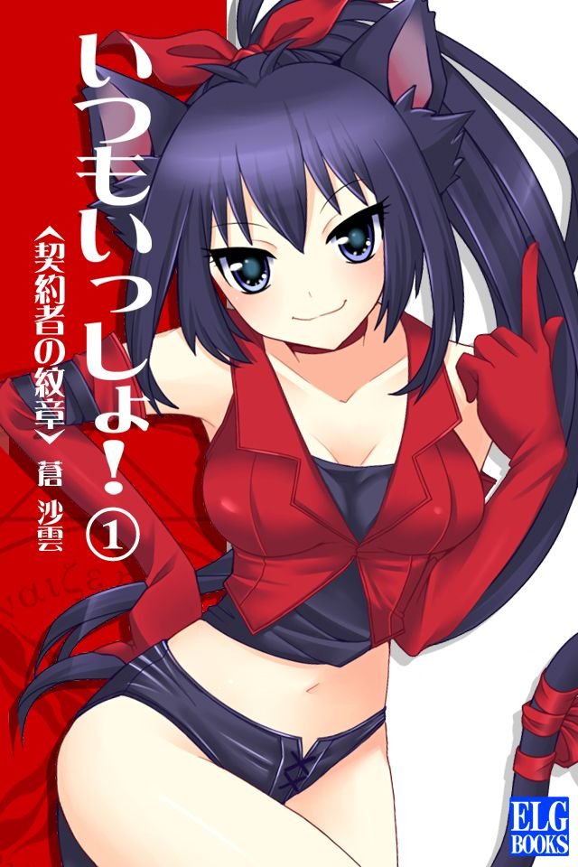
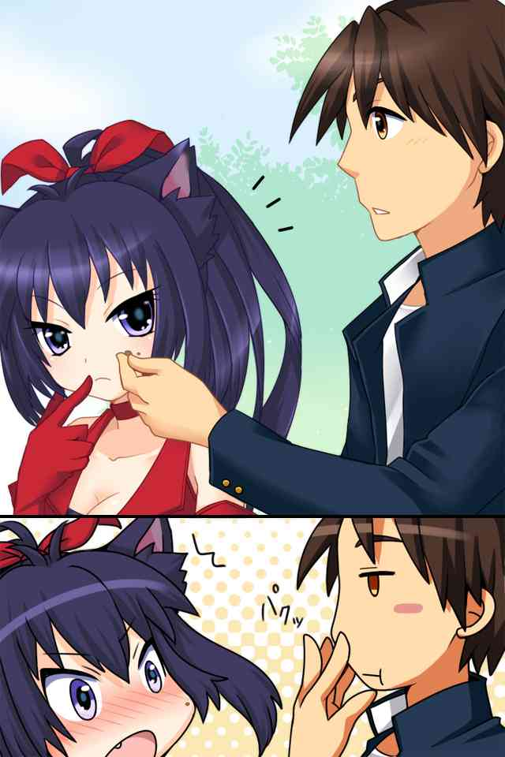

| いつもいっしょ！ １ 契約者の紋章 | |
| 蒼 沙雲 | |
| elglobe (2013) | |

ＥＬＧ文庫
「オマエ......オマエ......オマエ......」
『わなわな』という表現がふさわしいのだろう。
目の前の少女は、今まさに『わなわな』と肩を震わせながら、平常時なら可愛いだろうその声を、必要以上に低く、震わせながら、言った。
怒っている。それも、並々ならない怒り。
いきなりの事態で頭の中がまったく整理のついていないユーイチにも、彼女が激しく怒っている事は理解出来た。が、わかっているのはただそれだけで、なぜ怒っているのか、いや、そもそもこの少女は誰なのか、そんな事すらもわからない。
気が付いたら、ユーイチはここにいた。
そして、目の前の少女は怒っている。
理解している事実はこれだけだ。
目の前の少女は、顔を少し赤らめながら、ユーイチをしっかりと睨 みつけている。
そんな表情だが、間違いなく可愛い子だ。......と思春期まっ盛りのユーイチは、まずそう思った。
きっと年齢は同じくらいだろう。
大きな瞳に長い黒髪。
最近はあまり見なくなったポニーテール。
その長い髪を縛っている大きめの赤いリボンが、なんとも女の子らしい。
そして、猫のような耳。大きな耳もまた......。
「み、耳 !? 」
一通り目の前の少女を観察し終わったユーイチは思わず声をあげた。いや、よく見ると耳だけではない、長い尻尾まである。
「......っていうか」
その観察を遮 るように少女が言う。
そうだった。
冷静に少女を観察している場合ではない。
そんな呑気 な事をしている間にも、いよいよ彼女の怒りが頂点に達したようだ。
声に含まれる怒りのトーンがユーイチにそう告げている。
そもそもなんだ？
この子はなぜ怒ってるんだ？
それも尋常 ではないほどの怒りを感じる。
この少女の目は、その怒りの目は、同じ人に対して向けるようなものではない。
例えるなら、敵。
自身の明白な敵に対して送りつけるような、そんな目だ。
な、なんでそんなに怒って......。
思考を巡らせようとしたまさにその時。
ユーイチは不意に、なぜ少女がこれ程までに怒っているのか、なぜこんなにも自分の事を敵視するのか、理解した。
ああ、そういう事か。
全てを理解した。
コスプレを邪魔したとか、何か気に障る事を言ったとか。
そんな難しい問題じゃない。
実に単純な事だ。
「むむむ、むね、胸ぇぇぇぇぇ !? 」
ユーイチの手は、しっかりと目の前の少女の胸を掴んでいた。
これ以上ないくらい、見事なまでの鷲掴 み。
ユーイチの手のひらは、少女の胸にピッタリと密着していた。
初めての女性の胸体験である。
「......っつまで！ 触ってんのよ !! このっ！ ド変態がぁ！」
当然のごとく、少女はがっしりと胸を掴んでいるユーイチの手を振り払い、そのままその手をユーイチの顔面へとスイングした。
二回、いや、ほんの少しだけ間を置いて、さらにもう一回。
甲高い打撃音とともに、ユーイチの顔は左右に高速で振られた。
最初の二発は平手。そして最後の一発はしっかりと拳が握られていた。
「んグっ！」
ユーイチの顔面に激痛が走る。
「オマエ......オマエ......よくも......よくも......」
ユーイチを引き離した少女の怒りは、この程度では全く収まっていない。いや、むしろヒートアップしているようにすら感じる。ちょうどウォーミングアップが終わり、これから本番、と言ったところだ。
「よりにもよって、この私の部屋に忍び込んだ事！ たっぷりと後悔させてあげる！ ......覚悟はいい !? 」
もともと吊り目だろうその目をさらに吊りあげながら、少女は言った。
「ちょ、ちょっと待て！ 違う、違うんだよ！ これは何かの間違いで !! 」
口の中に何となく血の味が広がっている気がしたが、今はそれに構っている場合ではない。
とにかく何か弁解しなければ。
必死に頭の中にアイデアを巡らせるが、ユーイチの頭はそんなに都合よく、スマートに事態を収拾出来ない。
「な、何が間違いよ！ ......よりによって、わ、わ、わ、私の !! ......とにかく！ ......殺すから！」
けして武術の達人というわけではないユーイチだったが、それでもわかる。
この少女から感じる並々ならぬオーラ。
これはいわゆる殺気、だ。
そういうレベルの、敵意剥き出しの尋常 ではないオーラを感じ取ったユーイチは、急いで身を起こした。このままここで何もしないでいると、間違いなく殺される。わけがわからないまま、目の前の少女に、わけのわからないうちに殺される。
本気でそう感じた。
とにかく今出来る事は何かを最大限に考えた結果、ユーイチは咄嗟 に踵を返し、走り出した。
三十六計逃げるに如かず、である。
「ごめん！ ほんとにごめん！ とにかく間違いなんだ！ 全部間違いだから！ なんかそういう感じだから！」
「あ！ ちょっと！ 待ちなさい !! 」
ここがどこなのかもはっきりとわからない。が、ユーイチは後ろで喚 いている少女を背にひたすら走った。
ドアを抜け、廊下を抜け......。
後ろからものすごい勢いで追いかけてくる声が聞こえるが、振り向いている暇はない。そして恐らく弁解の余地もない。あの様子では、話を聞いてもらえる可能性はゼロに等しいだろうし、そもそも何を話していいのかさえ、わからない。
全速力で走りぬける。
それにしてもここは一体どこなんだろう。
見慣れない建物の中を疾走しながら、改めて思った。
なんで、なんでこんな事に......。
なんでこんな事になってんだ、俺 ......。
五月下旬。
暑くもなく、寒くもなく。
言葉にすればまさに『丁度いい』、そんな気候の日。
新学期が始まって、しばらく経った頃。
新学期、新学年。
期待していたほど何か新しい事が始まるわけでもなく、結局、いつもと同じような毎日を過ごす。そんないつもとなんら変わらない日。先日までのゴールデンウィークも、ユーイチは特に何かをするでもないまま、テレビを見て、ネットをして、そんな風にダラダラと終えてしまっていた。
「はぁーあ」
ため息ともとれるようなあくびをひとつ。
もうすでに時間は昼の十二時を回ったところだった。
「また坂本に怒られるなぁ......」
誰に言うでもなくそう言いながら、遅刻の言い訳を考えていた。
坂本と言うのは、ユーイチの通う高校の体育教師だ。校門から校舎へ続く唯一の道のすぐ横に、体育教師達のいる教員室が併設されている。遅刻者は全てそのまま体育教員室へと呼ばれ、説教を受けるのがこの高校の風習でもあった。
いっそ仮病で休んでしまおうか、とも思っていたが、高校二年のこの時期、あまり出席を減らして内申書に傷をつけてしまうのも避けておきたい。一応大学進学が希望のユーイチは、やはり内申書の存在が気になっていた。
いつも通学時間は学生で賑やかになるこの通学路も、この時間の人通りは少ない。
けだるそうにしながら、結局、学校までの平和で退屈な道を、いつもの通り歩く。
そんないつもと全く変わらない日常のひとコマは、ちょうど川のそばの道に出たところで、変化した。
「何だ......これ？」
ユーイチは思わず声をあげた。
声をあげてから、慌 てて周りに人がいないことを確認する。少し大きな独り言を言ってしまったことを後悔しながら、もう一度目の前にあるものを凝視 した。
ユーイチの目の前には、輝く光の球のようなものが浮かんでいた。
眩 く光るそれは、突然ながら、さも当たり前のようにそこにあった。
......これってアレ？ プラズマとか言う......人魂の正体だとか言われてるアレ？
脳裏には、心霊現象肯定派と否定派の学者がいろんなウンチクを声高に叫び合うテレビ番組の一幕が思い起こされる。
実に珍しい物を、まさに自らの目の前に発見したユーイチは、キョロキョロともう一度周りに人がいないことを確認した。
すっげぇ。まさかこんなものが眼の前で見れるなんて......。
目を細めながら、その目の前の白く眩 い光の球を見る。
これって......危ないのかな？
ちょっと触って......。
好奇心からユーイチはそっとその光の球に手を伸ばした。
刹那。
目の前の眩 い光は、突然意思を持つかのように、ユーイチを覆い込んだ。
「う、うわ......ちょ、なんだこれ !! 」
白い光は文字通り光の速さでユーイチを包み込む。
「だ、誰か !! 誰か助け......うわっ !! 」
つい先ほど周りに人がいないことを確認したばかりだが、それでも出来る限り大きな声を出した。が、その声はすぐに光の壁に遮 られるようにして消される。あまりの眩 しさに目を開けていられなくなったユーイチは、目を強く瞑 りながら、必死に手足をばたつかせた。
「う、うわぁぁぁぁぁぁぁ」
体から重さがなくなっていく感覚。
まるで宙に浮いているかのような感覚。
初めて経験した奇妙なその感覚を味わいながら、ただ叫んだ。
しかし、その叫び声は光の外には微塵 も漏れることはない。
そして、次の瞬間。
その景色から光が消えた。
そこにユーイチの姿はなく、いつも通りの住宅街。
いつも通りの通学路がそこにあった。
川のそばのその道には、確かについ先ほどまでユーイチの持っていた鞄 だけが、物悲しげに取り残されていた。
そして今、ユーイチは黒髪の少女に追われていた。
わからない。
とにかくわけがわからない。
そんなことを言っていたところで、何が解決するわけでもないのだが、とにかく何度もわけがわからない、と呪文のように繰り返すしかなかった。
あの少女が怒り狂っている理由だけはかろうじてわかったものの、ここがどこで、あれは誰で、なんでこうなったのか。現状を示す大事な三本柱がまったくもって抜け落ちている。
プラズマに触ろうとした事は、はっきりと覚えている。
そして、その次の瞬間、光が大きく広がったのも覚えている。
次に目を開いたら、目の前に少女がいて、あろうことかその胸を揉 んでいた。
原因と結果がまるで結びつかない。
ああ......いきなりすぎて......よくわからなかった。
これは、初めて触れた女性の胸についての感想だった。
小さくはなかった。
いや、どちらかと言うと結構しっかりとあったような気がする。
そうだ、よくわからなかったけど、なんだか柔らかかったような気もしてきた。
そんなことを考えながら、今はちょうど階段を駆け足で降りているところだった。
ここが何階に位置するのかは分からなかったが、本能的に下に降りた方が逃げやすそうだったので、手摺りを支えに二、三段ぐらいを飛ばして一気に駆け下りた。
ユーイチの直感は見事に当たり、駆け下りた先が建物の一階であることが、大きく開いた窓の外の景色からわかった。降りる階段はもうない。次の進路は右か左か。直感的にユーイチは右の通路へと曲がる。
そして曲がってすぐ目の前に人影を見つけ、間に合わず、そのままもつれるように倒れ込んだ。
「イテテテテ......」
こけた際に膝を打ったのか、ジンジンと痛む。
しかしすぐに目の前に同じように倒れている少女を見つけ我に返った。
「あ！ ごめん！ その、急いでて......」
目の前の少女に手を伸ばしながら言う。
少女は手で『必要ない』とユーイチを遮 ると、自力で立ち上がった。
「大丈夫。......問題ない。......走ると危ない。気をつけて」
物静かな雰囲気で少女は言った。
可愛い子だな。......と、今日同じような事があったことをすでに過去の事のように思いながら、ユーイチは目の前の少女を見る。
これまたユーイチと同じような年頃。
青みがかった銀髪。
大人びた雰囲気と幼さの両面を持つような、いわゆるおかっぱボブな髪型。
少しきつそうにも見えるが、綺麗なはっきりとした目。
そして、大きな獣の様な耳。同じく尻尾。
「み、耳 !? 尻尾 !? 」
ユーイチは思わず声に出した。
そう言えばついさっきもこんなことがあったような。
「何？ ......まだ何か......あるの？」
そんなユーイチを、目の前の少女は訝 しげに見ながら言う。
「あ、いや、なんでもない。それより本当にゴメン。今ちょっと急いでて......」
一瞬目の前の少女に気を取られて忘れていた事実を、言いながら思い出した。
......そうだった、今まさに追われているんだった。
ユーイチが思い出したと同時に、つい先ほど駆け足で必死に降りてきた階段に黒髪の少女が現れた。少女は階段をものすごい勢いで駆け下りてくる。根元で縛られた長い髪の先端が、ぶわっと広がるその様は、今のユーイチには死神のようにも見える。
「エルっ！ エルっ！ そいつ捕まえて！」
黒髪の少女は、銀髪の少女に叫ぶように言う。
「......なに？」
エル、と呼ばれた銀髪の少女が、黒髪の少女とユーイチを不審そうに交互に見る。
「あ、いや、これは、その......」
目の前の銀髪の少女を突き飛ばしてでも逃げるべきか、ここは冷静に話し合いの場を持つべきか。ユーイチの頭の中が二つの意見に割れる。
「早くそいつ捕まえて !! 変態よ！ クズよ！ 強姦魔よ !! 」
えらくひどい言われようだが、当然反論している暇などない。
黒髪の少女は激しい剣幕で、階段を降り切る。
その目が、射程範囲に捉えたユーイチに向かって怪しくキラリと光る。
やばい、やっぱり逃げるべきだ。ユーイチがそう判断した頃には、すでに遅かった。
「......そう。わかった」
エルは静かに言いながら、ユーイチの服をしっかりと掴む。
「いや、違うんだっ！ ほんとに違うんだっ！ これは何かの間違いで......」
恐る恐る黒髪の少女の方へと目を向ける。
ユーイチの目に映ったのは、獲物を見つけた獣の瞳。
怒りの化身のような憤怒の形相。
そんな少女が、ものすごい勢いで放つドロップキックの足の裏。
「しゃらぁぁぁぁぁぁぁ！ 変、態、撲、滅！」
少女が宙を舞いながら、よくわからない掛け声をあげて迫ってくる。
あ......。
モロに当たるんだろうな、とユーイチが思った時には、すでに黒髪の少女の華奢な足が鈍い音とともにユーイチの顔にめり込んでいた。
「ンゴッふっ !! 」
少女の全体重を懸けた一撃。
それは思いのほか強烈な一撃で、モロに顔面に食らったユーイチは見事に吹っ飛んだ。
スローモーションに宙を舞いながら、
『可愛い少女に思い切り蹴られたら、もしかしたら気持ちがいいのかもしれない。いろんな意味で』
......なんて思っていた事もあった日々を激しく後悔しつつ、意識はそこで途切れた。
「......これでよし、と」
黒髪の少女が、意識不明で重体なユーイチの手足を、容赦なく縛りあげる。
「ナーニャ。状況がよくわからない。......何があったの？」
黒髪の少女の行動を止めるでもわけでもなく、ただ見守っていたエルは、一通りの作業が終わったのを確認してから訊 いた。
「私も、まったくわかんないのよ。とにかく、コイツはあれよ。変質者」
「変質者？」
「そう。いつの間にか私の部屋に侵入して来て、いきなり......」
ナーニャと呼ばれた黒髪の少女は、言いながら改めて怒りが湧き上がる。
「もう二、三発殴っておいてやろうかしら」
すでに殴る気満々にこぶしを振り上げた。
「......待って」
エルはそんなナーニャを静かに制止すると、改めてユーイチを見つめる。
マジマジとしばらくユーイチを観察した後、ポツリと言った。
「......人間」
「......え？」
エルの意外な言葉に怒りを忘れてナーニャは再度ユーイチを見る。
「間違いない。......人間。直接見るのは......初めて」
怪訝 そうにユーイチを見るナーニャに、念を押すようにエルが言った。
「まさか」
だが、エルの言葉を裏打ちするように、先程縛り上げたこの男には、動物の耳も、尻尾もない。
「人間？ コイツが？ ......なんでこんなところに？」
「わからない。でも......門から来たわけではなさそう。......詳しく状況を教えて」
「状況って言われても。忘れ物を取りに部屋に戻ったら、急に上からコイツが覆いかぶさってきて......」
「おそらく......そこが出口」
「......じゃ、じゃあ......」
はぁ......、と聞こえるように大きくため息をつきながら、諦 めるようにナーニャは言った。この男が人間だとすると、怒りの感情をぶつける訳にはいかなくなる。
「......そう。必要以上に危害を加えると、むしろナーニャが罰せられることになる」
「もう！ な、ん、な、の、よ！ コイツは！」
「......事故。......諦 めて」
なんとなく慰 めるようにエルは言った。
「......で？ コレどうしよう」
一通りの怒りをなんとか抑えることに成功したナーニャは、蔑 むように縛りあげたユーイチを一瞥 する。
「学院長。......そこへ連れて行く。......報告が必要」
「はぁ。そうね。じゃぁ」
再度大きくため息をつきながら、ナーニャは諦 めるように言った。
「このヘンタイ人間を......とにかく連れて行こう」
二人は縛られたユーイチを引き摺 りながら、学院長室へと向かう。
ところ変わって、こちらはナーニャ達が向かっている先、学院長室である。
「ん～。今日のダージ！ リンッ !! はサイコーですねー。ん～」
ズズズ、と音を立てながら、この学院の学院長であるアイアゲートは、さも美味しそうに紅茶をすすった。
英国紳士の様なパリッとしたスーツに、細く横にとがったひげが何とも似合っている。髪もぴったりと撫 でつけられていて、黒ぶちの眼鏡はどこか知的な雰囲気を出している。少し垂 れ気味の犬耳は、そんなかっちりと決められた中の一つの愛嬌 のようにも思える。
学院長と言うよりは、ビジネスマンのようにも見えるこの四十代くらいの男は、目下この学院長室で、部下でありこの学院の教師でもあるエキドナの入れる、日替わり紅茶を楽しむのが日課であった。
「いつもいつも、大げさに喜んでくれてありがとうございます」
その日替わり紅茶を入れた本人、エキドナは皮肉を込めながら言った。
というのも、学院長のアイアゲートは、エキドナの入れる紅茶はすべて『おいしい』と表現するのである。どんなに変わったものを用意したところで、いつも決まって色々な形容詞に包まれた『おいしい』を発言するのだ。
最初の頃はそれは確かに嬉しかったのだが、さすがに毎度毎度『おいしい』というのは、いささか以上にわざとらしく感じる。嫌いなものや合わないものがあったなら、そう言ってくれればいいものを。
そんな事を思いながら、いつもおいしそうに紅茶を嗜 む学院長の表情を観察する。言葉でどんなに飾ってはいても、表情には出るかもしれない......。その微妙な表情の変化を見つけてみよう、と。
だが毎日観察を続けるものの、今のところまったくその表情には変化が見られないでいた。
「ん～。何か気に障りましたか？ ......素直においしいと伝えたかっただけなのですけどねぇ」
「いえ......。気にしないでください。......ありがとうございます。毎日そう言って頂けて、私も作りがいがありますわ」
「ん～。そう言って頂けると、私も嬉しい限りですねぇ」
アイアゲートはにっこりとエキドナに微笑みかけると、視線を窓の外へ向けた。
今日は晴れ、それも雲がほとんどない、いわゆる快晴と呼ばれる天気である。
「ん～。今日も良いお天気ですねぇ。日々是平和。良い事です。ん～」
独り言のように外に向かって言ったところで、ちょうど学院長室のドアがノックされた。
アイアゲートが、どうぞ、と言うと同時に可愛らしい声が響く。
「失礼しまーす」
声の主であるナーニャ、その隣にはエル。そして、引き摺 られる様に両手を縛られたユーイチがキョロキョロと辺りを見回しながら入って来た。ここに来る途中、どうやら足の緊縛は取ってもらえたようだ。
「ん～。これはこれは。かわいい我が校の生徒達。そして......」
アイアゲートはユーイチを見つけると、中指で眼鏡を少しかけ直し、にっこりと微笑んだ。
「おや～。これは珍しいお客さんですねぇ」
少し楽しそうに言うアイアゲートに対し、すぐにナーニャが事情を説明する。
「学院長。この、ド変態なセクハラ人間が急に私の部屋に迷い込んで来たみたいなんです。......あと、やらしい事をしようとしてました！ （なので少し傷めつけました）」
最後の方は消え入りそうな小声である。
「ちょ！ お前な、誤解だって言ってるだろ」
すぐさまユーイチが反論する。
「......いやらしい事、しようとしてたの？」
「あ、いや、あの、あれはホラ、不可抗力と言うか...」
事実がないかと言われれば、ないとは言えない。
どうしてもユーイチの返答はしどろもどろになっていた。
「オマエ......うるさい」
ナーニャがユーイチを睨 みつける。
「こらこら。あなた達。仲がいいのはいい事だけど、ここは学院長室なのよ。ちょっとはしおらしくしなさい」
三人のやり取りが一通り終わったのを見届けて、エキドナが苦笑いをしながら言った。
「まぁまぁ。ん～。お客さんとすぐに打ち解けるのはいい事ですよ。ん～。なかなか将来が有望です。それに......」
アイアゲートは机の上に置いてあった金色のタクトを取ると、ユーイチの方へと軽く振る。次の瞬間、ユーイチの体を縛っていたロープがハラハラとほどけた。
「ん～、君もなかなか見込みがありますねぇ。......こちらに迷い込んで来た方々は、通常もっと不安と恐怖で怯えていたりするのですけどねぇ」
「ふぅ......。やっとほどけた......」
久しぶりの両腕の自由な感触を確認したあと、改めてユーイチは目の前の男を見る。
やはり、と言うべきか。意外に、と言うべきか。
目の前の紳士にもまた、今日出会った二人の少女と同じように動物の耳がある。こうなると、当然その隣にいたエキドナの方へもまた視線を移す。そして、そちらにもやはり同じような動物の耳を確認した。
......なんなんだ、これ。コスプレ？ コスプレ会場なのか、ここ？
「ん～。ま、まぁ、いきなりで色々と驚く事も多いでしょう。ん～。ここはまぁ焦らずに。まずは少しお話をしましょうか」
ユーイチの様子を見て取ったアイアゲートは、優しい声で話し始める。
「え～。まずはようこそ、人間界からのお客様。私はここケイロン魔術学院の学院長、アイアゲートです。ん～。君の名前を教えていただけますか？」
「あ、あの。俺、ユーイチです。ユーイチって言います」
「ん～。ユーイチ君。まずはじめに言っておきますね。ここはコスプレ会場じゃぁ、あ～りません。あ、あと、変な宗教団体とか、おかしな妄想を持ってる人たちの集団とか、そういうのでもありませんよ。ん～」
あらかじめユーイチの想像していたような事は、とりあえず否定される。
「ふふ。ん～。そんなに驚かなくてもいいですよ。今までこちらに迷い込んだ人間の方々は、大体そう言う事をおっしゃるものなのです」
まさに思っていたことを言い当てられて、キョトンとしているところへ、アイアゲートはさらに話を続ける。
「ん～。つまりですねぇ。ユーイチ君。一言でわかりやすーく言うならば、あなたはここ、バロッキニアに迷い込んだのですよ」
そう言われても、と言いたげな表情でユーイチはアイアゲートを見る。
「まぁ、いきなり信じろと言われても、ん～、なかなかこれは難しいですよね」
「は、はぁ......」
「ん～。つまりですねぇ。あなた方風に言うならば、つまりは異世界、という事ですよ。あなたは偶然その異世界への入口に遭遇してしまったみたいですね～。なかなか運がいい。滅多に遭遇出来るもんじゃないんですよぉ」
少し得意げな顔をしてアイアゲートは言ったが、ユーイチにとっていきなり信じろと言われても無理な話である。
それどころか、頭のおかしい......。
「あ～。あれですよ。別に頭のおかしな人たちではないですよ。ん～。ここに来る前、何か覚えている事はありませんか？」
「......そういえば。光の球があって、それに近づいたら、光に包み込まれるような感じになって......」
「そーう。まさにそれですよー。ん～。その光は次元の歪 みがもたらしたものなんですねぇ。滅多にあるものではないんですが、たまぁーに、そうやって自然にこちらの世界との扉が開いてしまう事があるんですよねぇ。で、......その後は、どうなりました？」
「その光に包まれて、体が浮いたみたいになって──」
その続きを思い出した瞬間に、ユーイチの顔が赤くなった。その後に起こったのは、例のナーニャとの......。
いわば、人生の記念すべきメモリアル。
その記憶が鮮明になりそうな一歩手前で、不意にユーイチの腹に肘 がめり込んだ。
「痛てっ！」
ナーニャが凄みを利かせて睨 んでいる。余計なことを言うと隙を見て殺されそうだ。
「へ、変な事考えてるんじゃないわよ......ヘンタイ」
「お、俺は別に......」
その二人のやりとりを見ていたエキドナは思わず噴き出した。
「あなた達、もうそんなに仲良くなったの !? いいわね......若いって」
「な !? な、な、仲良くなんて、なってません！ な、なんでこんな奴と......」
本気で迷惑そうにナーニャが言う。
「その、俺......異世界とかよくわからないんですけど、とりあえずその、さっきから凄く気になってる事が......」
ユーイチはそう言って、エキドナの顔の少し上、つまり......先程からずっと気になっていた彼女たちにある獣耳をちらりと見た。
「ふふ、これね。......ああ、その前に自己紹介がまだだったわね。私はエキドナ。この学院の教師をしているの。ちなみにそこの二人も私の教え子なのよ。......宜しくね、ユーイチ君」
礼儀正しくエキドナが頭を下げる。
改めて自分の前に来たエキドナを見てユーイチは思った。例によって、例のごとく。
綺麗な人だな、と。
形容するなら、ザ・大人の女性。
お姉さん風にまとめられた金髪のサラサラな髪。
切れ長で淫靡 な雰囲気を感じさせる目。
落ち着いた、色気のある声。
そして......たわわに実ったボリュームたっぷりの胸。
まさにユーイチが考える『憧れのちょびっとエッチなお姉さん像』にぴったり当てはまるのがエキドナであった。
「あら、ユーイチ君。......どこを見てるの？」
「あ、ああ、いや、その、べ、別に」
急に顔をのぞきこまれた格好になったユーイチは思わず顔を赤くして俯 いた。
「あ、あの！ よ、宜しくお願いしますっ！ エキドナ先生っ！」
「ふふ。ユーイチ君って可愛いのね」
「へ？ あ、あ、ありがとうございます......」
ユーイチの顔がだらしなく、締りのない顔になると、ナーニャがすかさず言う。
「ほら、先生！ コイツ絶対やらしい事考えてる！ ......ほんっと間抜けな顔して」
「なんなんだよ！ さっきから......」
「まぁまぁ。ナーニャさん。男の子はね、これぐらいエッチな方が、後々良かったりするのよ」
エキドナがそう言って、ねぇ、とユーイチに同意を求める。素直に頷 くべきかどうか、ユーイチが答えあぐねているところで、エルが久しぶりに口を開いた。
「......かなり、テーマが逸 れてきている」
「そ、そうだったわね。......そうそう。これね、これが気になるのね」
エキドナは改めて自分の耳を指差した。
それ以外にも色々と気にはなってるんですが......と、危うくまた胸元に視線を移しそうになったのを、理性でなんとか我慢したユーイチは、改めて心を落ち着けて、素直に訊 く。
「そうそう。それです。その耳......、それ、本物なんですか？」
確かにユーイチもその耳に見覚えがないわけではない。アキバなんかでたまに女の子がつけてるアレ。メイドさんの格好をした子がつけてるアレ。まぁアレはもっとちゃちぃな感じだったけど。
「ふふ、もちろん、本物ですよ。あなたのその顔の横についている、耳。それと同じものですよ。あなた方の世界にこういう耳の生物がいるでしょう？」
そう言って、エキドナはユーイチの手を握る。ユーイチは瞬間に、ドキッと緊張が走った。女性と手を繋ぐ事なんて殆どないユーイチにとって、いきなりの事すぎて頭が追いつかない。
「ほら、触ってみて」
そう言ってエキドナは、ユーイチの手を自分の胸に......ではなく、頭の耳の部分へと持っていく。
「あ、は、おおぅ......」
何と表現していいかわからないが、触れたソレ、その感触はまさに生きた生物のものだった。とても後から付け足したものには思えない。そんなことを思った瞬間、ピコンっとエキドナの耳が動いた。
「あ、ごめんなさい。驚かしちゃった？ でも、結構そこ、くすぐったくて......」
「あ、いえ、ごめんなさい」
ユーイチは慌 てて手を離した。何とも言えない感触。後よくわからないけど、なんだかやらしい気分。
なんとなくユーイチの顔は赤くなる。
そして、そんなユーイチを白けた目で見る女生徒が二人。
「うっわー。見てあのエロそうな顔。......ドン引き」
「......確かに」
心なしかエルの表情も白けているように見える。
「ん～。まぁ、そういう事です。この耳はもちろん後から付けたものではないんですよぉ。尻尾も同じく。私たちもあなた方人間と同じ知性を持った生物です。こちらの世界の人間、私たちはあなた方人間と区別する為に、自らを獣人 と呼んでいますがね。んん～。......大体は、ご理解いただけましたか？」
アイアゲートの言葉に、ユーイチはここにきて初めて一番訊 きたかった事を訊 いた。
「......それで、あの、俺は、どうなるんですか......？」
「も～ちろん。ちゃぁんと帰してあげますよ。元の世界、人間界に」
「そっか。なら、よかった」
「でもですね。んん～。アルテミスの門は、ええと......」
アイアゲートがちらりと見ると、エキドナがすぐに手帳を開いて調べる。
「先月初旬に開いてますから、次回は約三ヶ月後になります」
「ん、そうーですかぁ。つまりですね。約三カ月、ここで暮らしてもらう事になりますねぇ」
そう言いながら、アイアゲートはすでに冷めてしまっていたダージリンティの存在を思い出し、再度飲み始めた。
「あ、あるてみすのもん？」
聞き慣れない言葉を、ユーイチは何とか復唱する。
「......一般にも開放されている人間界とバロッキニアを結ぶ次元移動手段の事。......緊急時以外は、通常定期的にしか解放されない」
ユーイチの疑問に、エルが答える。
「えーと......つまり？」
「ああもう！ オマエ......見た目通りアッタマ悪いわね」
理解出来ない、と言った顔のユーイチに、ナーニャが呆 れながら言う。
「いーい？ ......オマエは、次に人間界に帰れる準備が出来るまでの......約三カ月、この世界で暮らさなきゃいけないってことよ。......わかった？」
ナーニャの説明は口は悪いが、意外にわかりやすい説明だった。ユーイチもここでやっと理解する。
と同時に、愕然 とする。
「え......？ さ、三カ月 !? ちょっ！ それは困ります！ 三カ月も家に帰らないなんて......」
間違いなく行方不明者として警察に捜索されるレベル。
内申書がどうのこうのってレベルじゃない。
「ん～。こればっかりは仕方ありませんねぇ。アルテミスの門の使用は、とても厳しく管理されていますから。それに、まだあなたが悪意のない人間であると......証明出来た訳でもありませんしねぇ。この三ヶ月は、いわゆるあなたの身辺調査期間、とも言える訳ですねぇ。ん～。ここは我慢してください。まぁ出来る限りの事はするつもりですけどねぇ」
「は、はぁ......」
わかったようなわからないような。
納得出来るような出来ないような。
とにかく三カ月はここで生活しなきゃいけないという事らしい。まだいまいち状況を把握出来ていない節はあるのだが。
ただ......漠然と。
ここが自分の知っている世界とは違う世界なのかもしれない、という事だけは受け入れ始めていた。先ほどの耳の感触、それにナーニャやエルの少し変わった格好。とてもドッキリでコスプレしてるようには見えない。
......なんと言えばいいか。
そう、わざとらしさがまったくないのだ。
コスプレなどで感じる、あの、イカニモ感。ふわふわしたお遊びの感じ。あれがない。
ものすごく自然に、ユーイチから見ると少しばかり変わった服装を着こなしている、そんな漠然とした思い。そして、何となく感じる、いつもとは違う世界のニオイ。
「まぁ、せっかくですから。ん～。その三カ月はこちらの世界を見学でもして楽しく過ごしてください。......ただ、戻るときには、規則に則りこちらでの記憶は消去させてもらいますけどねぇ」
ユーイチの思考を遮 るように、アイアゲートが言った。
「......そうそう。こちらの世界にいる間は、ここの用務員の仕事をしてもらいます。ん～。ま、これは、働かざる者食うべからず、ですね。それに、三カ月もあるとお金も必要でしょうから。ん～。まぁ焦らずに、ゆっくりと理解していけばいいですよ」
「は、はぁ...」
とりあえず、三カ月ここで暮らすという事。その間はこの学院の用務員として働くという事。とりあえず食事と寝場所は用意してくれるという事。あと、お金も貰えそうだという事。なにはともあれ、ちゃんと帰れるという事。なんとなくそういう事なんだ、という事は理解した。......まぁとりあえず、命の危険は無いようだった。
「ナーニャさん、エルさん」
続いてアイアゲートは、二人に呼びかける。
「「はい」」
ナーニャとエルがほぼ同時に返事をする。
「ん～。あなた方には彼がこの世界で問題なく三カ月過ごせるように、ん～、世話係を命じます」
「え？ えぇぇぇ !? 」
「んん～？ 不服ですかぁ？」
「でも、それは、そのっ！ だってコイツ、ヘンタイですっ！ 危険です！ なんかやらしいニオイがします！」
「ん～。大切なお客様ですよ。この世界に迷い込んでしまった人間を無事に元の世界に送り届けるのも～。それはそれは大切な仕事ですよ」
「でも......」
「ん～。......不服、ですかぁ？」
「うう......」
ナーニャは言葉に詰まりながらも、結局最後はこう返事をするしかない。
「......わかりました」
なんと言ってもアイアゲートは、この学院の最も偉い人なのだ。アイアゲートは、ナーニャにお願いをしているのではない。指示、命令。そういった拒否の出来ない類のものだ。もちろんナーニャも、この学院の生徒である以上、学院長の命令には従わなくてはならない。
アイアゲートはナーニャの返答を確認すると、今度はエルの方へと視線を向ける。
「エルさんも、いいですね～？」
「......わかりました」
エルの方は別段嫌がる様子もなく、引き受ける。
「はっはー。よろしくな！」
ざまぁみろ、と言いたげなニュアンスでからかい半分にユーイチが言った。
「オマエ......」
「ま、大事なお客様なんだから、しっかりお世話してくれたまえ」
「......このエロガッパ......あとで、絶対！ 痛い目合わせてやるから......」
「......まぁ、あまり指示に従わない場合は、考慮してもいいと思う」
「う......」
「それではユーイチ君。記憶には残らなくとも、魂にはしっかりと思い出として刻み込まれるものです。ん～。よい三カ月を過ごしてくださいねぇ」
締めくくり、とばかりにアイアゲートが言う。
「あ、それと。......ちゃんと仲良くするんですよ。これもまた、せっかくの出会いなんだから」
エキドナがにっこりと笑顔で言った後、一同は解散となった。
「はい、ここがオマエの部屋っ！ ここは学生寮で、一階のこの部屋が用務員室。......わかったっ？」
相当に投げやりなナーニャに案内されて、とりあえずこれから自分の生活の基礎となる場所に案内される。
つい先ほどナーニャに渾身のドロップキックを食らわされた、ある意味思い出深い場所。そのすぐそばに、これからユーイチが生活をする用務員室兼寝室があった。
用務員室は半分が倉庫のようになっていて、もう半分が居住区のようになっている。倉庫部分と居住部分とは、カーテンで仕切れるようだ。
「あ～むかつく！ なんで私がこんな事しなきゃいけないのよ！」
「あ、あの、なんか......ごめん」
「うるさいうるさいっ！ おまえは黙ってて！」
ナーニャの機嫌は明らかに悪くなっている。さすがに何となくユーイチも接しづらい状況の中、エルが静かに言う。
「......あんまり気にしないで。そのうち機嫌も治る。......と思う。それより......あなた、『ユーイチ』で......いい？」
──よかった。ちょっと暗い気もするけど、あっちの怒りっぱなしの不機嫌女子と違ってこの子は普通に話が出来そうだ。ユーイチはほっと胸を撫 で下ろした。
「あ。ごめん。自己紹介がまだだった。俺、ユーイチ......あの、君らは──」
「私はエル。エル・カルセドニー。......エルと呼んで。みんな......そう呼んでる」
エルはそう言うと、少しだけ笑って見せた。出会った頃から思ってはいたが、このエルという子は、なんというか、表情の起伏が非常に乏しい気がする。口が少し動く程度、だ。あのナーニャって子がそうでないのだから、この獣人......だったけ？ その全体がエルの様な感じ、というわけではなく、単なる個性のようだ。
「......ナーニャって呼んでくれればいい。......オマエはオマエだけど」
続いてナーニャが、仕方なさそうに言う。......相変わらずナーニャはユーイチの顔をまともに見ようともしない。
「へいへい......」
とりあえず学院長室からここまでノンストップに歩いてきた三人は、この用務員室でそれぞれ適当なところに座った。
「......それにしても......いまだによくわからないんだけど......ここは、バル？ バロ、バロ......」
「......バロッキニア」
「そうそう。それそれ。それが、この国の名前って事か？」
「......違う。バロッキニアは......この世界の名前。この国の名は、エウルピア」
「は、はぁ......。つまり俺は、あの光に飲み込まれたら、それは異世界に繋 がってて、このバロッキニアに来た......って事だよな」
「......正確には、バロッキニアのエウルピアに来た、と言う事」
「なるほど。──見た感じ......耳とか尻尾以外は、俺らと変わらないんだな」
そう言いながら、ユーイチはエルの体に視線を移した。
エルは、体にぴったりフィットしたボディスーツの様な服を着ている。
ちょっとだけ残念な胸元に視線を移した際に、エルが少しだけ顔を赤くして持っていた分厚い本を抱えるように胸元を隠す。
「......なんかやらしい視線！ こんのっエロガッパ！」
すかさずナーニャがそこに突っ込む。
「あ、いや違う！ その、あれだ！ 変わった服を着てるんだな、って思っただけだ！ ただそれだけだ！ 他意はない！」
「......どうだか」
「......この服は、機能性に特化した活動服。魔術の施された繊維で縫われているので、ちょっとした魔法なら防げる」
エルは構わずに淡々と続ける。
「は、はぁ......って魔術？ 魔法？」
妙なキーワードが、ユーイチの頭に引っかかった。
「そう。さっきの質問。あなたと私たちは基本的には殆ど同じ。ただ、違う点がいくつかある。......さっき言っていた耳と尻尾。これは進化の過程の違い。それ以外に身体的な違いは多分ほとんどない。大きく違うのは文化。そして、魔術。これは生活習慣上の違い。私たちは、自然の粒子と自身の魔力とを融合させて、エネルギーに変える術を持っている。あなた達の人間界とは、世界の構成要素が微妙に違う」
「つ、つまり......？」
「あー、もう！ だからこういう事よ」
なかなか理解しないユーイチに、業を煮やしたナーニャが手を差し出す。
次の瞬間、ナーニャの手のひらに、ぼうっ、と炎が出現した。
ユーイチが人間界で見ているのと同じ、炎。それが可燃物を一切使わず、ナーニャの手のひらの上で燃えている。
「な !? な、な、な !! 」
「これが魔法。ま、見たとおりのままよ」
ユーイチの反応が期待以上だったのが嬉しかったのか、少しだけ得意げな顔でナーニャが言った。
そして、今度はその炎を跡形もなく瞬時に消して見せる。
「ふっふー。どうよ？」
続いて、いよいよドヤ顔で言う。
「ちょ、ま、マジで !? え？ え？ えー !? 」
目の前でいきなり行われた不思議現象にたじろぎながら、説明を求めるようにユーイチはエルの方へ視線を向ける。
「それが、魔法。もちろん私も使える。この世界の約半数くらいの人は......魔法を使う事が出来る」
「そ、そうなのか !? 」
「......そこまで驚くことはない。これは、あくまでも環境の違い。私たちも、あなた達の世界のカガクの資料を見た時は、皆驚いた」
「そ、そういうもんなのか...」
「......そう。単なる文化の違い」
「な、なるほど......」
全てを納得したわけではないが、ここではそう納得するようにしよう、とユーイチは思った。
「その魔法、この世界では俺も使えるのか？」
「......さぁ。ごめんなさい。私もそこまで人間について詳しいわけじゃない。学院で教わった程度の事しかわからない。適性があるのなら......あるいは使えるようになるのかもしれない」
「そっか......。でもあれだな。魔法なんてあったら、色々と便利なんだろうな」
「......そこまで何でも出来るというわけではない。便利さで言うのなら、おそらくあなた達の世界のカガクの方が優れていると思う。......今度、人間界の事も教えてほしい」
エルはどうやら人間界に色々と興味があるようだった。別にユーイチが何か褒 められたわけではないのだが、何となく嬉しい気分になった。
「あ、ああ。そりゃぁもちろん、なんでも訊 いてくれよ」
「......ありがとう」
「いや、こちらこそありがとう。すげぇわかりやすかったよ。......誰かさんと違って」
「ほぉー。それは......一体誰の事かしらぁ？」
当然ナーニャはユーイチの皮肉を聞き逃さない。
「......さぁ？」
「かっちーん！ いい度胸してるじゃない！ この私と一戦やる気 !? 」
ナーニャは立ち上がると、再び炎を手のひらに出す。
「わ！ ちょ、待て！ ......って、アレ、攻撃に使えるの？」
ユーイチはエルに説明を求める。
「......もちろん。ナーニャの火は攻撃力の高い属性。かなりの攻撃力。......危険」
手品程度のものとしか考えていなかったユーイチはその言葉に焦る。
「いぃい！ 待て！ それは『なし』だろう！ ...さ、ほら、機嫌直して、な？」
そう言って無理やり笑顔をつくる。
ユーイチがまだ十七年の人生で覚えた、喧嘩 を避ける方法のひとつ。
必殺『やる気のない笑顔』だ。
相手に敵意がないのを伝えつつ、相手の怒りを抑える効果がある。ちなみにユーイチは生まれてこの方、この必殺技のおかげで喧嘩 は一度もした事がない。
「なんなのよ、ヘラヘラしちゃって。みっともない。......それでも男なの？」
ユーイチの必殺技が効いたのか、ナーニャは呆 れたように言うと炎を消した。
厄介事が片付いたと見ると、エルも立ち上がった。
「さ......。遅くなる前に、外に出ましょ」
「外？ 案内、してくれるのか？」
「ええ......。そうするように先生に言われている。そのために今日の授業は休んでいい事になっている。......もちろんナーニャも」
「ああもう！ わかってるわよ。......ほら、早く行くわよ！」
ナーニャはそう言うと、怒りをぶつけるように強く扉を開いて、真っ先に外に出た。
「ナーニャって......いつもあんな感じ？」
「まぁ......。普段から感情の起伏は激しい。でも、今日は特に。......ナーニャに何かしたの？」
「あ、いや、まぁ......」
言いながら、ユーイチはナーニャにしてしまった事思い出す。
まぁ、いきなり見ず知らずの男に胸を鷲掴 みにされたんだしなぁ......。
普通は怒るか......やっぱり。
肝心の感触は一切覚えていないユーイチにすれば、少し理不尽なようにも思えたが。
「ちょっとした事故だよ。......本当に」
「......そう」
「さ、じゃぁ、案内、頼むよ」
「......わかった」
ナーニャの後を追うように、エルとユーイチが部屋の外に出た。
よくわからない世界に来たんだという事、ここが自分の知っているいつもの世界とは違うという事、ナーニャやエルはユーイチの知っている人間とは違うという事。
ただ漠然と理解はしたが、特に思っていたほどの恐怖や不安は感じなかった。
ユーイチの頭の中がただ整理出来ていないだけかもしれなかったが。
エウルピア最大の商売の街『アイギス』
古くから、城下町としてさまざまな文化を取り入れながら栄えてきた街。他国の文化はもちろんのこと、人間界からの文化の流入もあるという説明に、ユーイチは驚く。
基本的には中世ヨーロッパのような雰囲気の街並みではあるが、街をゆく人々を見れば、その文化の多様性は明らかで、実にさまざまな格好をした人たちがいる。この国の伝統的な衣装を着ている者もいれば、人間界で見たことのあるようなデザインの服を着ている者もいる。
ある程度統一されたファッションに見慣れたユーイチには、まるで何かのお祭りのようにも見える。そう言えばナーニャとエルは、その服装の系統が全く違う。
「なんか、凄いな。......色々と」
一通りの説明を受けた後であっても、イマイチまだ自分が異世界にいることは実感できないではいた。が、それでも少し辺りを見回せば、やはり街ゆく人々の耳は皆、獣耳だ。そして、皆それぞれ尻尾を有している。
その姿を目にするたびに、ああ、異世界なんだな、とは思う。
「ふっふーん。どう？ この国最大の街の感想は。なかなかの都会でしょー！」
よくわからないが、ナーニャは得意げに言った。
「都会、ねぇ......」
都会、と言われても、正直ユーイチにはピンとこない。
ユーイチのイメージする都会は、新宿や渋谷、つまり立ち並ぶ高層ビルや、さまざまな店舗の看板が立ち並ぶ街並みだ。
しかし、ここは緑に囲まれたのどかな田舎街、そんなイメージ。ギラギラしたネオンサインがある訳でもなく、奇麗で静かな街並みが続いている。
確かに都会と言うだけあって、人通りは多く、活気には溢 れているようだが。
「......ナーニャ。......ユーイチと私たちでは恐らく感覚が違う」
エルは学院の資料で見た人間界の景色を思い出しながら言った。
「そ、そうだな。でも、ほら、あれだ。いい感じの街じゃん」
嬉しそうに言っているナーニャに対して、できるだけ気を遣った言い回しをしてみる。街に来るまでの間に、大分ナーニャの機嫌も治ってきたようだったので、わざわざまた機嫌を損ねたくない。......というより面倒くさい。
「ふぅん。そっか。ま、じゃぁ、この街の良さがわからなくても仕方ないわね」
ナーニャは少し残念そうに言うと、「あれ！」と少し先の露店を指差し、そちらに向かって行く。
ナーニャの指した方角から、何やらいい匂いがする。
それに、何となく覚えのあるような匂いだ。
「オマエ、これ知ってんじゃない？」
ナーニャに言われるまま露店の前に来て、ユーイチは思わず声を出した。
「タ、タイ焼き !? 」
それはまさにタイ焼き。ユーイチがよく知っている、中に餡 の入った魚の形をした和菓子のアレだ。
「ちょ、ちょっと待て！ なんでタイ焼きがこんなところにあるんだ !? 」
「......これは人間界から伝わったもの。この街には、こうやって人間界のものも多く伝わってきている。......さっきも言ったけど」
「な、なるほどなぁ......」
服装はまだ何となくユーイチが見慣れたもの、という程度だったが、こちらはモロだ。人間界のものと何一つ変わらない。
「味ももちろん、あのタイ焼き、なんだよな？」
「人間界のタイ焼きはわからない。けれど......タイ焼きはおいしい。とてもとても、おいしい」
エルが妙にタイ焼きを褒 めるので、もしかして、とユーイチは確認する。
「タイ焼き、好きなのか？」
「......ええ」
エルは口では淡々と、だがその表情は珍しく生き生きとしている。
ユーイチは彼女のその表情の変化から、おそらくエルがかなりタイ焼きが好きなんだと理解した。
「よ、よし。こうやって案内してくれてるお礼に、俺が奢 るよ！」
親指を立ててエルに笑いかけると、ユーイチは店主に「タイ焼き、みっつ！」と元気に言った。
「......待っ......」
エルは少し驚いてユーイチを止めようとしたが、すでに間に合わなかった。
得意げなユーイチに対して、店主は少しばかり申し訳なさそうにしながら、
「おいおい、にーちゃん。こんなもん渡されても困るよ？」
「え？ あ......もしかして......」
世界が違うのだ。国が違うのだ。どんなに見慣れたものであっても、ユーイチの見慣れた紙幣で支払いはできない。
「オマエ......ホント馬鹿。人間界のお金が使えるわけないでしょ。......おじさん、これね」
横からナーニャが気を利かせて支払いを済ませる。
「そうだよな......悪ぃ......」
「......エルの前でカッコつけようなんてするから」
そういう気持ちがなかったかと言えば嘘になる。異世界の住人とはいえ、耳や尻尾以外にほぼ違いのない女の子、それもユーイチから見てかなり可愛い女の子の前で、そういう気持ちは確かにあった。呆 れたような口調でナーニャに指摘されて、よりいっそう恥ずかしさがこみ上げる。
「お......俺は別に......」
「はいはい。......ほら、これ」
そう言ってナーニャはタイ焼きの一つをユーイチに渡した。
「あ、サンキュ......」
運良くまだ出来立てのようだ。しっかりと掴めない程に熱い。指先で熱を逃しながら、落とさないように掴む。
早速、異世界のタイ焼きはどんなもんかと一口。
そして驚く。
紛 れもない、タイ焼き。
何一つ違和感のない、タイ焼き。
ユーイチが生まれてから何度も味わった、あのタイ焼きの味、だ。
「うまい！ これは間違いなくタイ焼き！」
「そう。......よかった」
「俺のいた世界のタイ焼きとまったく同じだ！」
「ここのタイ焼きは......この国で一番おいしい」
どことなく嬉しそうにエルが言った。
「へぇ。他にも人間界のものって、色々あんの？」
「いっぱいあるわよ。ほら、例えばあれって、確かそうじゃなかったっけ？」
誰よりも早くタイ焼きを食べ終わったナーニャが言う。
まるで子供のように、口のそばに餡 をつけながら。
そういえば妹もよくこんな状態になってたっけ。
ユーイチには六歳年下の妹がいる。無意識に、いつも妹にするようにナーニャの口元に手を伸ばしていた。
「え !? あ、え、ええっ !? 」
突然の事に、ナーニャは目を丸くした。
だがユーイチは何の迷いもなく、ナーニャの口元から取った餡 を自分の口に入れる。
「......たく。いつまでたっても......って、あ......」
ユーイチが自分のうっかりに気が付いたのは、すべての行動が完了してからだった。
「え、あ、え？ え！ え......」
ナーニャは石のように固まったまま、顔を紅潮させていく。そんなナーニャを見て、ユーイチもハッと気付き、同じように顔を赤くした。

「あ、いや、ち、違うんだ、その、これは、つい──」
「......つい？」
「だからほら、その、あ、俺、妹が......」
「オマエ......オマエ......オマエ......」
初めてナーニャに会った時に見た『わなわな』と肩を震わせる動作。
今回、その原因が怒りなのか、恥ずかしさなのかは分からなかったが。
「つつつ、つい......で、ですって？」
声も震えている。
助けを求めるように、ユーイチはエルの方を向く。......が、なぜかそこにいたはずのエルはいない。
何となく、ユーイチにはこれから起こる事が予想できた。
即 ち。
「こんのぉ......っ！ エッロガッパぁぁぁぁぁ !! 」
「あっ、待っ、ひぃ......」
瞬間、ナーニャの手から炎が生まれる。
そして。
ズドォォォォォォォォォオン
轟音。
ユーイチを眩 しい光が包む。
アイギスの街の入口付近で、突然の爆発。
ああ、死んだかな、俺。
見事に宙を舞うユーイチ。
意識を失う直前、ユーイチが見たもの。
少し離れた物陰に避難している、タイ焼きを口に咥 えたエル。
思いっきり顔を真っ赤にしながらキッと目を吊り上げているナーニャ。
そして。
......まぁ、今のは俺が悪かった。
今更の、少し遅めの反省。
「この！ 馬鹿っ！ 馬鹿っ！ 馬鹿ーっ！」
ナーニャの叫びが、うっすらと耳に届いた。
なんでこんなことになってんだ、俺......。
今日何度も思った事だ。
ちょっとうっかりしてただけじゃないか。
まだ体中のあちこちが痛い。
幸いにして命拾いはしたようだが。
「ったく！ 私史上最っ高に！ 最っ低の一日だったわ。......誰かのせいで！」
一通りの街見学が終わり、夕方になってきたので再度用務員室に戻った三人。
ナーニャは用務員室に入るなり、奥にあるベッドに飛び乗る。
そして嫌悪を隠すそぶりなく、まず言った。
ちなみに、あれからユーイチがナーニャに話かけても、睨 みつけられるばかりでほとんど口をきいてはくれなかった。案内らしい案内はほぼ皆無だ。
何度か弁明を試みたものの、ナーニャは全く意に介してはくれなかった。
「......だからゴメンって！」
「世の中にはね、謝って済む問題と、済まない問題があるのよ。......知ってた？」
「......」
「一応、これで案内は終了。これが用務員の仕事内容。......読んでおいて」
ナーニャとユーイチのやり取りに構わずに、エルがいつの間に用意していたのか用務員の仕事をまとめた紙を渡す。
「お！ サンキュ」
受け取って内容を確認する。
まぁ、内容はユーイチの世界のものとあまり変わらないようだ。学院内の備品の整理や、破損個所の修理。あとは学院長や各教員からの指示待ち。
ここは学生寮にもなっているので、夜の見廻 りなどが主な仕事となっていた。
「ま、大体わかったよ」
「そう。......ちゃんとアルバイト代もでる。......頑張って」
「ああ、ありがと。そうだな、タダでお世話になるわけにもいかないからな」
特にこき使われたりもなさそうだ、と少し安心する。
「ああ、そう言えばナーニャやエルもここに住んでるのか？」
「もちろんそうよ。この上の階が私たちの部屋になってる。オマエ......まさか、変な事考えて......」
「ない！」
「......いーい？ ちょっとでも不審な行動見かけたら、今度は容赦なくぶっ放すから！」
「いや、つい先程、容赦なくぶっ飛ばされた訳ですが」
「あんなの、かなり手加減してるわよ」
「あれ以上になったら普通に死ぬと思うんですが」
「そもそもオマエが変な事しでかさなきゃいいんでしょ？」
「......あのな！ なんでこんなまったく知らない世界に来てまでそんなことしなきゃいけないんだよ」
「いーや。お前はなんか、しそうな、しでかしそうな......そういうニオイを持ってる。ヘンタイの香り」
「お前っ......なんつーひどい事を」
「ベーだっ」
ナーニャが人間の女の子がするように、舌を出す。
そんな行為は、まったく人間のそれと違わない。
それどころか、動物の耳が付いてる分、なんとなく人間の女の子以上に愛らしく見える。
「なによ」
「いや、そうやってると可愛いな、って思ってな」
お世辞なく、素直に言ってみる。
このナーニャという娘は、多分普通にしていればすごくかわいい部類に入る。あくまでもユーイチの基準で、だが。
しかし、常時相手を威嚇 するような目つきの悪さと、悪態ばかりが出てくる憎たらしい口元のおかげで、随分と損をしている気がする。
「な、な、な !? な、なに言ってるのよ......ば、馬鹿じゃないの !? 」
あまり褒 められる事に慣れていないのか、ナーニャは必要以上に動揺した。
「おや？ 照れてる？」
「照れてないっ！ 大っ体、オマエに言われたって嬉しい訳ないでしょ！」
「いや。......俺にはわかる！ お前は今......照れているっ！」
「オマエ......いい加減に黙らないと......」
ナーニャがいよいよ戦闘態勢に入りかけたところで、エルがタイミング良く切り出した。
「そんな事より。......他に訊 きたい事は、ある？」
「うーん、そうだな......」
正直に言うと、色々と訊 きたい事はあったのだが、どこから訊 いたらいいのかわからない状態であったユーイチは一度頭の中を整理する。
......とはいえ、今訊 いたところで特に解決しないどころか、余計に頭がぐちゃぐちゃになってしまいそうなことばかりだ。
なので、色々考えた結果、本当にどうでもいい質問をすることにした。
「なぁ。その耳と尻尾なんだけどさ。今日いろんな人の耳とか尻尾とかをざっと見てたんだけど、なんかそれぞれ形とか違うよな？」
「......もちろん、似たような形はあるけれど、基本的にはみんな進化の元になった動物の特徴が出ている。たとえばナーニャは猫という動物」
「ああ、やっぱり猫耳なんだな」
「え？ オマエ、猫ってわかるの？」
不意に不思議そうにナーニャが言った。
「え？ 猫って、あの猫だろ？ いわゆるキャットだろ？ ......そりゃぁ、わかるよ。その耳も、何となく猫っぽいな、って思ってたんだが......なんかおかしいか？」
逆にユーイチも不思議そうに訊 く。
「......こちらの世界では、私たちの元になった動物はすでにいない。進化の過程で、元々いた動物たちは姿を消してしまっている」
「あ、そうなのか。......人間界には動物はいっぱいいるけどな」
「......そう。だから私たちは進化の元になった動物をこの目で見たことはない。ちなみに私は──」
「それも何となくわかる！ ......犬だろ？」
「ブー！」
エルではなくナーニャが笑いながらすかさず言う。
結構自信があったのに、とユーイチは意外そうにもう一度エルの耳を見た。
それほど動物に詳しいわけじゃないユーイチにとっては、再度見たところで判断できるわけもなかったが。
「......私は犬じゃない。狼だから。......間違えないで」
そう言ったエルは、こころなしか少しムッとしているように見える。
「......犬と狼は似ていても、まったく違う生き物」
どうも気に障ったらしい。
別に犬でもいいとは思うのだが、本人にしかわからない微妙な問題があるのだろう。
「あ、その、ごめん」
「ふふーん。......じゃぁオマエは猫ってどんなのか知ってるんだね。ねーねー。猫ってどう？ かわいい？」
ナーニャが猫を元にしたっていうのは何となくそういう気がしていた。耳も確かにそれっぽい感じがしていたし、何となく目つきとか、行動とか、うまく言い表せないが、表現するならば、猫っぽい女の子という感じだろうか。
「あ、ああ......。多分一番人気あるんじゃないかな」
「ふふーん。そっか。そっかー」
何となくナーニャは嬉しそうにしている。
思えば今日はナーニャのこういう笑顔はあまり見た記憶がなかったが、こうして笑っていると、人間と変わらない普通の女の子なんだな、と改めてユーイチは思う。
「な、な、なに見てんのよぉ。オマエまた......なんか変な事」
「か、考えてないよ！ ......言われてみれば、やっぱり猫って感じだなって思ってさ」
「それは何よ？褒 めてるの？ けなしてるの？」
ナーニャが問い詰めるように言う。
一応頭の中で「猫っぽい」という表現が、一般的に褒 め言葉に当たるかどうかを考えた上で、
「もちろん......褒 めてるんだよ」
と言った。
「あ。え......あ、そっか、そっか......」
少し照れているナーニャに、今度はエルが続く。
「......狼は？」
「あ、え？」
「......狼は、人気は......ないの......？」
「あ、いや、狼は......」
不安そうなエルにどう答えていいのか言葉に詰まる。多分大半の日本人は狼なんて動物園でしか見たことはないだろうし、ペットにするような動物でもない。存在はもちろん知っていても、あまり馴染 みがあるとは思えない。
ましてや人気があるのかどうかなんて......。
「あ、ほら、あれだ。狼は......も、物語によく出てくるから......」
失礼にも、その時ユーイチは三匹の子豚の悪い狼を頭の中に描いていた。
「そ、そう......」
エルは何となくユーイチが困っているのを見抜いたのか、それ以上追及はしなかった。
正直追及されると非常に困る場面であったのでほっとする。
「さてっと......」
ナーニャは、しばらくベットでごろごろした後、時間を見て起き上がった。
「エル。そろそろ、戻ろっか」
「......わかった」
「オマエ......言っとくけど、特に用事がない限り部屋に近づいたりしたら」
「行かねえよ......」
「まぁほんとに何か、とんでもなく困るような事態があった時だけ、近づくことを許可してあげる。......私がこの上の階のＢ号室。エルがその隣のＣ号室。わかった？」
「ああ。まぁできるだけ近づきません」
「んじゃぁね。早速今日の夜から見廻 りあるんだから、ちゃんとしなさいよ」
「あ、ああ、わかってるって」
「それじゃぁ、また。明日」
「あ、ああ。今日はありがとな」
ナーニャとエルは用務員室から出て、何やら話しながら階段の方へと消えていった。
不意に用務員室が妙に静かになる。
改めて感じるのは、この世界には車が存在しないからか、ものすごく静かだ。
聞こえてくるのは、風の音。木々の枝葉の擦 れる音。
そういった自然の音だけだ。
ユーイチは、大きくあくびをすると、部屋の隅のベッドの方へと移動する。
考えたら、いろんな事がありすぎて、今日は疲れた。
用務員の初仕事である夜の見廻 りまでは、まだ少し時間もあるし......。
特にすることもないので、ユーイチはベッドに飛び乗る。
不意に、ベッドからいい香りがした。
そう言えば。
......さっきまでの事を思い出す。
そして、このベッドに......ナーニャが横たわっていた事を思い出した。
「お、おおぅ !! 」
ユーイチは思わず声に出した。
異世界の人間とは言え、年頃の女の子が寝転んだ後のベッド。
それも何だか凄くいい香りがする。
ユーイチは思わず変態的に、枕に顔を押し付けた。
「はぁ...。やばい......もろ変態だ、俺......」
誰に言うでもなく、呟 いてみる。
枕に顔を押し付けて、残り香を楽しんでいるのだ。
自分が今どれだけ変態的行為に及んでいるか、なんて事は誰よりも自分自身が分かっている。
だが、思春期のユーイチにとって、これは抑えられない衝動だった。
「男はみんな、変態さ......」
どこかで聞いた名言を、言い訳がましく呟 いてみる。
あれで、性格さえマトモならなぁ......。
本人が聞くと、恐らくまた爆発事件が起こるであろうセリフを呟 きながら、気が付くとユーイチはそのまま眠りに就いていた。
「はぁぁぁぁぁ」
大きなあくびをしながら、ユーイチはろうそくの明かりを頼りに学院の校舎を見廻 っていた。
学生寮のすぐ隣の建物が校舎になっている。三階建てのなかなか立派な建物だ。
夜の校舎はなかなかに薄気味悪い感じはしたが、それよりも目新しいものがたくさんの景色に気を取られる。
まるで映画やアニメの中で見るような、中世的でアンティークな世界。
「あら？ 早速お仕事頑張ってるのね」
不意に後ろから声を掛けられた。
振りむくと、そこにはエキドナが立っている。
「エキドナ......先生」
「ふふ。ユーイチ君。昼間はちゃんとナーニャさん達に案内してもらった？」
「え、ええ、まぁ......」
実際には案内はそこそこのうちに、謎の爆発に巻き込まれて意識を失っていただけではあったが。
「そう。まぁ慣れるまでには時間が必要だと思うけど......頑張ってね」
「は、はい！ 俺、頑張ります」
改めて、綺麗な人だな、と思った。
ユーイチは、妹がいるのも関係してか、もともと姉萌え属性の持ち主だ。年下の女の子はどうも妹と重なってしまって、そういう対象になりにくい。逆に、年上のお姉さんには、人一倍の興味を持っている。
ちなみにユーイチが所持していたアダルトコレクションの八割は姉モノだ。
「ちょうど良かったわ。私もこれから帰るところだし、初めての事だから今日は付き合うわ」
「あ、ありがとうございます！」
エキドナと並んでの見廻 りはユーイチにとってなかなか刺激的だ。
それに......なんだかいい香りがする。
こちらの世界の女性は、もしかしたら人間以上にいい匂いがするのかもしれない。
「あ、そうそう。これを渡しておくわね」
エキドナはそう言って、一枚のカードを渡した。
「これが当面の身分証明書代わりになるわ。......大切なものだから、なくしちゃ駄目よ」
「あ、はい。ありがとうございます」
エキドナ曰 く、このカードで学院内の食堂も利用できるそうだ。早速明日から使ってみよう。
「ところで、ユーイチ君は人間界のどこから来たの？」
「え？ どこって......」
「ふふ。私ね。しばらく人間界にいた時期もあったのよ。私がいたのは、ニホン、っていう国のオーサカっていうところ」
不意に聞きなれた言葉が出て、一瞬戸惑う。
「オーサカ、って大阪ですよね !? お、俺は東京です。同じ日本の......」
「ああ、トーキョー。わかるわ。すっごい都会のところでしょ」
「そうです、東京です！」
「へぇ。やっぱりユーイチ君はニホンジンだったのね。何となく、私が見てきた人たちと同じような格好してるなぁって思ってたのよ。ふふ。ユーイチ君って実は都会っ子だったのね」
「いえ、まぁ......」
「じゃぁ、こっちの世界だと、ちょっと色々不便かもね」
「いえ、でも、こういう自然に囲まれているのって、すごく新鮮です。ところで......そんなに結構簡単に行き来できるもんなんですか？」
「ふふ。そうね。知らないとまったくわからないだろうけど、実は結構交流はあるのよ。もちろん限られた人間との間にだけね。国のお偉いさんなんかは、結構こちらの世界の事は知ってるわよ」
「へ、へぇ......そ、そうだったんですね」
「あら、意外。もっと驚くと思ったのに」
驚きは当然あった。が、正直なところ、まだまったく現実味がない。
今だってこうして普通に話しているエキドナは、ユーイチが今まで出会ってきた人間と特に何も変わらない。普通の素敵なお姉さん、だ。
当然、耳と尻尾を除けば、であるが。
「まぁ、驚いてはいるんですけどねぇ......。まだまったく実感がないです」
ユーイチが正直に言うと、エキドナは優しく微笑んだ。
「そうでしょうね。ま、学院長もおっしゃっていたけど、せっかくだから楽しんじゃいなさい。色々と得難 い経験ができると思うわよ。......それに」
エキドナは悪戯 っぽく笑いながら続けた。
「気に入った娘がいたら、手を出しちゃってもいいわよ？」
「せ、先生！」
自分の学校の先生がエキドナの様なタイプだったら、もっと楽しい学園生活になっていたかもしれない、そんな事をユーイチは思った。
それからしばらく人間界の事や、こちらの世界の話で盛り上がりながら、校舎を一回り。一通り見終わったところで校舎から出る。
「あとは、学生寮の方ね。この学院の学生寮はそんなに大きくないから楽だと思うわ。......私はこっちだから、夜道には気をつけてね」
「あ、はい。ありがとうございました」
エキドナはユーイチとは逆の方へと歩いて行った。
ユーイチも学生寮の方へと戻る。
「さってと、ぱぱっと済ませて今日は寝るか......」
壁に貼られている寮内の案内図を見ながら呟 く。エキドナの言った通り、そんなに広くはないようだ。地上三階地下一階。案内図によると、一つの階に部屋が十くらい。そんなに多くの学生がこの寮にいるわけではなさそうだ。とりあえず、用務員室がある一階は最後にするとして......。
ユーイチは三階から見廻 る事にする。
三階は全ての部屋が生徒の部屋の様だ。
まだ夜の九時頃だからだろうか、部屋から楽しそうな笑い声が聞こえたり、廊下を歩いている生徒もいる。
時々すれ違う生徒らしい女性の、何とも言えない視線を感じながらなんとか見廻 る。
......が、どうも様子がおかしい。
生徒のユーイチを見る目が、明らかに不審者を見る目つきだ。
とりあえず速足で三階の見廻 りを終えると、階段の踊り場に出る。
そして目にした壁の貼り紙から、抱いていた違和感の原因を見つける。
『ケイロン魔術学院女子寮』
......女子寮！
あの男子禁制の秘密の花園っ！
どうりでさっきから見かけたのは女性ばかりだったわけだ。
嬉しいやら、こっ恥ずかしいやら。
とにかく、あんまり生徒たちからは歓迎されてないだろう事は何となく理解できる。
老齢ならともかく、異世界人とはいえ......同じくらいの年齢のユーイチが用務員として女子寮内を徘徊するのだから。
「ま、まいったなぁ。女子寮か......。困った、困った」
顔はニヤけながらも、とりあえず紳士の嗜 みとして、困ったそぶりで呟 いた。
「......何が困ったの？」
「ぅえっ !? 」
慌 てて振り向くと、エルが大事そうに魔術書を抱えながら立っていた。
そう言えば、この二階にナーニャやエルの部屋があるって言ってたっけ。
「......何か困った事？ ......私で良ければ助けるけど」
「あ、いや......」
幸いにして、どうやらだらしなくニヤけた顔は見られてないようだ。
とりあえずほっと胸を撫 で下ろす。
「あれなんだな。ここ、女子寮なんだな......」
「そう。あなたが用務員という立場でないのなら、本来は入れない場所」
「ですよねー。あのさ、やっぱこうなんて言うか、避けられてると言うか、そういう目で見られてるのが何ともツライと言うか」
「そのうち皆も慣れる。......あなたの挙動がおかしくなければ」
「そ、そりゃぁもちろん、へ、変な事なんて、考えてないぞ！ 絶対」
「そう。それが賢明」
「ところで、じゃぁあれなのか？ ここ、このケイロン学院だっけ？ ここはあれ、女子校って事なのか？」
「いいえ。ケイロン魔術学院は、男子生徒もいる。こことは別の場所に男子寮がある。......ちなみに、寮を利用しているのは一部の学生。希望者のみ。自宅から通う者も多い」
「......そっか」
エルの説明に、ユーイチは嬉しいのか寂しいのかわからない返答をした。
エルの部屋はこの二階にあるので、とりあえずそこまでエルと一緒に行動する。
見廻 りと言っても形式上の様なもので、実際に何か事件が起こったり、というのは滅多にないようだ。まぁ当たり前だが。
「あ、エルー！」
後ろからエルを呼ぶ声が駆け寄ってくる。この声は......。
「......って、なんでオマエもいるのよ......」
ユーイチの予想通り、声の主はナーニャだった。
風呂あがりなのか、少し顔、体が紅潮している。ラフな部屋着が、スタイルのいい体つきに相まって艶やか......というよりユーイチにはもろにエロい、と映っていた。
が、もちろん凝視 なんてしようものなら、またこの猫娘を暴発させてしまいかねない。ちらりと瞬時に、しかし一通りナーニャの姿をしっかりと脳内にメモリーすると、すぐにユーイチは視線を外した。
幸いナーニャはそんなユーイチの録画 視線 には気が付かなかったようだ。
「な、何々？ ひょ、ひょっとしてあんた達......なんかいい感じなの？」
「......妙な勘違いはしないで」
エルが迷いなく即答する。
こういう場面で即答されると、ユーイチのガラスのハートは微妙に傷付いてしまうという事をもちろんエルは知らない。
出来ればせめてもの情けとして、最低限のマナーとして、少しくらい顔を赤らめて欲しいものだ。
「あれだよ。あんまりコイツの近くにいると、その、変な事......されるかもよ？」
「するかっ !! 」
言いながらユーイチはその辺の事情、つまり人間とそういう行為は変わらないのか、あるいはもし獣人と人間がそういう関係になったらどうなるのか、とか、そういった下の方の疑問が頭をよぎったが、もちろん口にはしない。
結局、なんだかんだと優しい二人は、その後ユーイチの見廻 りの案内をしてくれていた。地下は倉庫や大広間、それに浴場等が用意されていた。もちろん二人の手前、浴室は確認出来なかったが。
一通り建物内を見学したが、少しアンティークな雰囲気のある建物、という程度のもので、別段ユーイチの普段の生活からかけ離れている、といった風ではないようだ。
これなら問題なく過ごせそうだ、と改めて感じる。もちろん、電気やガスのようなものはないようだが。
「さてと。これで一通り終わり。......明日からはちゃんと一人でするのよ」
「へいへい。まぁそんなに大変な仕事でもないし、問題なさそうだな」
「また困った事があったら言って。......世話係は私たちの仕事、だから」
「ありがとう。そのあれだな。エルは優しいな」
「その......仕事......だから」
ユーイチが言うと、エルは少しだけ顔を赤らめた。
その仕草は、なかなかに可愛らしい仕草であったが、そのすぐ隣のナーニャはおもしろくなさそうに、いや明らかに不満げに言った。
「ちょい待ち！ エル『は』ってどういう事？ 私もここに思いっきりいるんだけど」
「あ、ああ。もちろんナーニャも、その、あれだ。優しい......よ？」
「何その！ いかにも付け足してみました的な感じっ！」
「あ、いや、その、あれだ。ナーニャみたいな可愛い子にこんなに優しくされて俺はとても幸せです！」
「さ、最初からそう言ってればいいのよ。ったく......」
メンドクサ！ とは正直思いつつ、もちろんそんな事は口には出せない。
「いや、ほんと二人ともありがとう。二人のおかげで、もうばっちりだよ」
これはユーイチの紛 れもない本心だった。
こんなわけのわからない世界に来て、それでもこうやって普通に過ごせていられるのは、少なからずこの二人がいてくれたおかげだ。ナーニャのように、初めからまるで友達のように近い距離感で接してくれたり、エルのように色々と的確に案内してくれたり、そんな何気ない事がこのわけのわからない状況を自然に受け入れる事ができている要因でもある。
「な、なによ、なんか急に素直になっちゃって......」
素直に礼を言われるのが嬉しかったのか、ナーニャは顔を赤くしながら言った。
「ま、あれだ。その......これからも宜しく、な」
「ま、まぁオマエがそこまで言うんだったら......な、仲良くしてあげてもいいけど......」
「......よろしく頼むよ」
こうして、ユーイチの異世界での初日が終わりを告げる。
色々な事がありすぎて、床 につきながらあれこれと頭の中を整理した。
思っていたほど、違いすぎるわけでもなく、でも明らかに違う世界。
ユーイチは自分でも不思議なほど、この環境を受け入れている。
不意に学院長の言っていた言葉を思い出した。
『せっかくですから、こちらの世界を見学でもして楽しく過ごしてください』
まあ結局そういう事なんだろうな。
今のところ、何か不都合があるわけでもなさそうだし。
今はまあせっかくの機会。
楽しんでいくしかないか。
ユーイチは意外にこういう状況でも冷静でいられる事、そして、なかなかのポジティブシンキングな自分に対して、若干嬉しくなりながら、笑みを浮かべた。
ま、なんとかなるでしょ。
布団にもぐりこんで呟 いてみる。
ユーイチには何となく、明日からの毎日が楽しいものであるかのように思われていた。
しかし、事件は突然にやってくる。
見慣れない部屋の、見慣れない天井。
だが、静かで、何よりも澄んだ空気。
仄 かに香る、自然の香り。
この世界の初日で、色々とあって疲れていた事もあり、ユーイチはいつもよりぐっすりと眠った。
そして迎えた朝。
心地いい鳥のさえずりに起されて、気持ちのいい目覚め......ではなかった。
用務員室のドアをガンガンと乱暴に叩く音。
その音でユーイチは目覚めたのだ。
「はーい。聞こえてるよ。ちょっと待って！」
ユーイチはけだるそうに答えると、急いでズボンを穿 いた。
まぁ、用務員という役割柄、こういう事もあるんだろう。
ドアの音は止む事なく、叩き続けられている。
「わかったから！ 今開けるから。......たく」
急いでズボンを穿 き終えると、まだ眠たい目をこすりながら、ユーイチはようやくドアを開けた。
ドアを開けるなり、いきなりナーニャが飛びかかって来て、ユーイチの胸倉を掴む。
そしてそのまま部屋の奥へと押し入れられた。
「オマエ......オマエ......オマエェェェェ！」
何故かいきなりナーニャは激怒していた。
「な、なんだ !? 」
こいつの日常は、八割が怒ってる状態なんじゃなかろうか......。
そんな事を思いながら、ユーイチは慌 てて心当たりを探った。
だがついさっきまで、ぐっすり健やかに眠っていたのだ。
心当たりなど、いくら探してもあるわけがない。
昨日は別に問題なく見廻 りを終え、笑顔で別れたはずだが。
「と、とにかく落ち着け！ な？」
とりあえず、なだめてみる。
それに対するナーニャの返答は平手打ち。
それも左右。往復で。
静かな部屋に二回甲高い音が響いた。
「な、なんで？」
ユーイチは情けない声を出すのが精一杯だった。
「こぉの！ 変態！ 変態！ 変態！」
ナーニャはユーイチの掴んだ胸倉をゆっさゆっさと揺らしながら怒鳴りつける。
「だから！ 何なんだよ一体！」
「オマエ！ シラを切るつもり !? 誤魔化せるとでも思ってるわけ !? 」
「な、何の事だよ !? 」
「......パンツ！」
「......パンツ？」
いきなり出てきた言葉に、ユーイチは一瞬何の事かが分からない。
まさか普通に下着の事を指しているわけではあるまい。
なぜなら女性のパンツなんてものは、まったくもって無縁の代物だからだ。
するとなんだ。
パンツ。
いや待て。ひょっとしてＰＡＮ２か？ ──ってますます分からない。
どっかで聞いた事があるような言葉なんだけどなぁ。
くそう。こんな時にネットがあれば......。
「だから、パンツ！ 返しなさい！」
「はぁ？」
「昨日干してあったパンツよ！」
「ひょっとしてあれか？ ......下着、って事か？」
「それ以外にどんなパンツがあるのよ」
「いや、待て。てかなんだ急に。なんでいきなりパンツの話になるんだよ」
「盗 られたのよっ！」
「......誰に？」
「オマエに」
「なるほどな。......ってなんでだよっ！」
「しらばっくれても無駄よ！ この女子寮で、そんな事するのはオマエしかいない！」
「無茶苦茶かっ！」
「大体、用務員代理とかいう肩書きのおかげで、ウロウロしてても不審がられないもんね！」
「ちょ、ちょっと待て！ 昨日一緒に見廻 り付き合ってくれただろーが。そのあとすぐ寝たんだぜ？」
ようやく、なぜナーニャがいきなり怒ってるのか、の理由は何となくわかった。まぁその筋の人達でもびっくりの因縁のつけ方だと思うけど。
とにかく、このよくわからない因縁のせいでナーニャにボコボコにされているという状況だけは早く何とかしないと。この娘の場合、冗談抜きで命の危険を感じる。
「とにかく！ 落ち着け！ 俺は何もしてない！ 無実だ！」
「そ、そんなの信じれるわけないでしょ！ 大体......なんかオマエは、そう、あれよ。エロいのよ！ オマエがそういう奴だって事は......誰よりもこの私が知ってる！」
「だからあれは......事故だって」
「それにほら、オマエはなんかこう、眼つきがやらしい！ ......ね？ お前しかいないの」
「ま、待て待て！ 何が『ね？』だ。アホかお前は。結局単なる言いがかりだろうが」
ナーニャは、すでにまったくユーイチの言う事を聞き入れるつもりはないようだ。
「あ、アホですって !? このぉ......人間のくせに !! 大体っ......こんな事今まで一度もなかった。オマエが来たその日にこんな事件が起こったというこの事実！」
「だから落ち着け！ 全部無茶な推測というか、何一つ筋が通ってねぇだろが！」
「さぁ、白状しなさい！ それと、返しなさい !! 」
ナーニャは全く聞く耳を持たず、迷いなく一方的に責め立て続ける。
が、いきなりこんなわけのわからない世界に来たその初日から、意気揚々 と下着を盗むほどの度胸はユーイチにはない。
むしろそれくらいの度胸が欲しいと思っている位だ。
「だからホントに知らないって！ なんで俺がそんな事するんだよ。それもわざわざナーニャの......」
あ、と思った時にはすでに遅かった。
「な、なんですとっ !? 」
見てとれるほど、ナーニャの怒りのボルテージは上昇していく。
「いや、違うぞ！ ナーニャ、いや、ナーニャさん......？ ほら、なんていうか、今のは口が滑ったというか、いや、じゃなくって......」
「オーマーエー......」
ナーニャが思い切りユーイチの両頬を左右同時に引っ張り上げた。
「いひゃっ...ふは、ひひゃう......」
「こんのぉー......」
ナーニャはさらに激しくユーイチの頬を揺らしまくる。
「この口っ !? こぉの私にっ！ あり得ない発言ばっかしてるのはっ !? 」
あひっ、あひゃぁ、と、そんな言葉しか出せないユーイチは、とりあえずナーニャにされるがままだ。
激しくナーニャに揺らされながら、窓の外の景色が飛び込んでくる。
ああ、綺麗だな。緑に囲まれた大自然。
ああ、これからすがすがしい毎日が始まるはずだったのに......。
てかなんで、こんな事になっちゃってんの？ 俺。
そんな事を思っていたユーイチの目に、変なものが飛び込んで来た。
それは見た事のない、羽の生えた生きもの。
なんだか丸っこいコウモリのような生物。
それが、窓の外で気持ちよさそうにぷかぷかと浮いている。なぜあんな姿で空を飛べるのかが分からないが、実際に飛んでいるのだから仕方がない。
その生物は、のんびりと、どこか少しだけ優雅に、すがすがしく晴れた空に浮かんでいる。口に何やら白い布切れの様なものを咥 えて......。
「あへぇッ！ あひぇぇっつ！」
とにかく必死にユーイチは伝えようとしたが、頬を引っ張られまくっているのでうまく言葉にならない。
「何よ......。観念したの？」
「ひがふっ！ あれ！ あれほみほ！」
「何言ってるのか全然わからない」
そう思うのなら、せめてその指を離せよ、と言いたいところだったが、とりあえずユーイチは必死に窓の外を指差した。ナーニャがユーイチの指の動きにつられて窓の外を見る。
と同時に、
「あっ !! 」
短い声とともに、ナーニャはユーイチの頬から手を離すと、急いで窓を開ける。その音に驚いたのか、丸っこい飛行生物は今までとは速度を変えて、慌 てて飛び去った。
「いたたたたた......。おい......」
ようやく解放されたユーイチが、確認するように言う。
「......今のなんか変な生物。ま、あれが何か、はこの際置いておいて。なんか......咥 えてなかったか？」
「......」
「俺の目に狂いがなければだぞ？ ......なんかこう、パンツのようなものが。とてつもなくパンツに見えそうなものが。......見えたような気がするんだが」
「......」
ナーニャは目を泳がせながら、一呼吸。
「......って！ こんな事してる場合じゃない！ 行くわよ！」
「へ？」
「早く来なさい !! 」
ナーニャは言いながら、今度はユーイチの奥 襟 を掴んで走り出した。
「な、なんで俺まで......」
「これもあれよ！ 用務員の仕事っ !! 」
よくわからないナーニャの勢いに押されながら、ユーイチも渋々同行せざるを得ない状況になった。
二人は変な生き物を追って寮から飛び出す。
「いた！ あそこ！」
ナーニャの指差した方向に、丸っこい変な飛行物体はいた。
追いかけている最中に聞いたところによると、アイバットっていう生き物らしい。この世界にいる妖魔 と呼ばれる生物の一種だそうだ。
詳しい事はよくわからないが、人間界で言うところの動物みたいなものか。こちらの世界ではちょくちょくその妖魔と呼ばれる生物が生息しているらしい。
モノによっては危険な場合もあるらしいが、今回のアイバットは特に危険はないそうだ。
追われていることに気付いているのかどうか、アイバットはパタパタと必死に飛んでいる。体は見事にまん丸で、体のわりに羽が小さいようにも見える。ユーイチの世界での鳥とは全く似てもいない。まるで丸っこいペンギンが空を飛んでいるみたいで滑稽 だ。
ふとすぐ近くに、ユーイチは見慣れた人物を発見した。
銀髪の狼娘、エルだ。
エルがベンチに腰掛けて、空を眺めている。
特に何をしているというわけではなく、ただ空を見上げているだけだ。朝のすがすがしい空気でも堪能 しているのだろうか。
ユーイチが気付いたのと同時にナーニャもエルの存在に気づいたようだ。
「エル！ エルっ !! 」
すかさずナーニャが言う。
「あいつ捕まえて！ あいつ！」
怪訝 そうにエルはナーニャの方を見ると、しばらく考えたのち、ナーニャの指差す方向に視点を移す。しかしすでにアイバットはかなり離れた位置まで移動してしまっていた。
「もう！ このままじゃ逃げられちゃう！ ......ほら、エロガッパ！ とっとと来なさい！」
部屋からここまで猛ダッシュでついてきたユーイチは、すでに息も絶え絶えだ。
「はぁ......はぁ......。ちょ、ちょい待て。もう無理」
そもそもユーイチはずっと帰宅部であり、運動とはあまり縁がない。それほど運動神経が悪いというわけではなかったが、特に鍛えているわけでもない。
いわゆるごくごく普通の高校生だ。
それに対して、やはり動物的な要素が大きいせいか、ナーニャはまったく息を切らしてはいなかった。特に疲れている様子もない。
「なぁに情けないこと言ってんのよ！ オマエの特技はエロい事だけなの !? 」
別にエロい事は特技ではなかったが、今はそれに答える元気もなかった。
「......今度はなに？」
とりあえず状況が分からないエルは静かに訊 く。
「さっきのアイバットが、私のパンツ（お気に入り）を盗んで行きやがったのよ」
ナーニャが力強く拳を握って言う。
「もう、いいじゃねーか。......パンツの一枚や二枚」
素直な感想だった。
お気に入りなのかどうかは知らないけど、たかがパンツ一枚で朝からなぜこうも過酷な修練を積まなければならないのか。
「オマエは黙ってて！ 大体オマエが用務員の仕事サボってるからこんなことになるんでしょ！」
「ちょっ！ なんだその滅茶苦茶な言いがかりは」
「とにかく！ そういう事なの！ ......オマエにも責任の一端はあるのよ」
さも当然のようにナーニャは言い切る。
「くぅぅ......」
何か言い返したいところであったが、それほど口が上手いわけでもないユーイチは、ただただナーニャの迫力に押されて黙るしかなくなった。
「......そう。状況はわかった」
こういう巻き添えにそれなりに慣れているのか、エルは特に不満げもなく言うと、ユーイチの方へ目をやる。
「......それで、あなたも？」
はぁ、と深いため息をついているユーイチに向かって。
「......よくわからないうちに、巻き込まれたんだよ」
「......そう。......大変ね」
少しばかり同情しながらエルは言うと、今アイバットが飛んでいった方向を指さす。
「......恐らくこの先の洞窟。あのあたりにアイバットは生息している事が多い。そこへ向かった可能性が高い」
「......なるほど」
と、しばらく考えてから、ナーニャは当然のように言った。
「そうね。むやみに探しまわるより、こうなったらそこに乗り込んだ方が確実ね。ほら、そこのエロガッパ！ シャキっとしなさい！ ......それにエルも。朝っぱらからこんなところで黄昏 てないで手伝って」
「......わかった」
「......わかりましたよ」
誤解が解けたところで、エロガッパの称号は外してくれないんだと思いつつ、なんとなく逆らえないユーイチは、従うしかなかった。
「......さ、意見もまとまった事だし、元気に行くわよ！」
同行者が同意した事で機嫌を良くしながらナーニャが言った。
「......いっつもこんな感じなのか？」
本人には聞こえないようにエルに耳打ちする。
「......私がナーニャと出会ったその瞬間からこんな感じ。多分、今更矯正は不可能」
特に表情を変えずにエルは淡々と言った。
「そっか。......お前も大変だな」
「......お互い様」
平常通り、とも皮肉とも取れる言い方でエルが言うので、ユーイチは吹き出してしまった。
無邪気、というよりはわがまま。自分勝手。こういう奴はどこにでもいるんだよなぁ......そう、クラスに一人くらいは。
こういうキャラってのは大体、周りの優しい視線で救われてるんだぞ、ったく。
ナーニャもなまじ美少女だから、わがままが許されてこんな子に育ってしまったんだろうなぁ。
ほんと世の中ってのはどこもかしこも不公平だよ。
人知れずそんな事を思う。
顔の良し悪しで言えばユーイチは中の中。
今まで生きた中で特にモテることはなかったが、かといって言われるほどひどい、というわけでもない。......と、信じたい。
そんなユーイチにとっては、男性だろうと女性だろうと「顔が良い」とされる人が羨 ましかったりする。色々な場面で優遇されているように、少なくともユーイチは感じていたからだ。
「な、なによ。なんか私に言いたい事でもあるわけぇ？」
ユーイチの視線を感じて、ナーニャが振り向く。
「いえ、別に」
「そ。......ほら。わかったらとっとと行くわよ」
「......へいへい」
冷静に考えると単なるとばっちり。
朝っぱらからよくわからないとばっちりでこうして付き合わされるハメにはなったが、まぁこの見ず知らずの世界で唯一知り合ったナーニャやエルと仲良くしていく事は必要だろう。
ユーイチはそう自分に言い聞かせて、渋々付き合うことにした。
そして一行は目的の洞窟へと向かう。
しばらく森林を歩いた後に、その洞窟はあった。
ユーイチは生まれてこの方、こんな自然の洞窟など直接見たことはない。ゲームやアニメの中でしか見たことのない洞窟が、少しだけワクワクさせる。
と、同時に不安もよぎる。
「なぁ、この中に......入るんだよな？」
洞窟の中と言うと、どうも虫やら何やらが沸いていてジメジメしてそうな感じをイメージさせる。不安そうにユーイチが訊 くと、エルがすかさず答える。
「大丈夫。特に危険はない。......それよりも、中は結構広いから。はぐれないで」
「あ、ああ。しっかりとついて行くよ」
「さ、いっくわよ！」
一人だけ張り切っているナーニャが、言いながら洞窟の中へと入って行った。
ユーイチとエルもそれに続く。
中は思ったほど嫌な雰囲気ではなかった。
ナーニャが炎を出して松明 代わりにしてくれているので、それほど暗くはない。
また、ジメジメしているということも特になく、なんとなく拍子抜けした。
「それはそうと。ナーニャ。なんか言うことないのか？」
心に余裕が出てきたユーイチは意を決してナーニャに言う。
「何よ？」
「何って......。さんざん人を疑ってだなぁ。しかもビシビシ殴り倒してだなぁ」
朝っぱらから勘違いで殴られた揚句、こうしてひっぱりまわされているのだ。少しぐらい、いや、むしろここはナーニャにしおらしく謝らせたい。
「だから何？」
「いや、そりゃぁお前......」
いったん息を吸い込み、
「俺、ユーイチは！ ナーニャに謝罪と賠償を要求するっ！」
得意げに言いのけた。
言ってやったとばかりに、ナーニャの様子を窺 う。
少しは反省して......いる様子は、微塵 もなかった。
そんなユーイチを見ながらナーニャは深くため息をつく。そして、これ以上ないくらいに呆 れた眼差しで、
「......オトコのくせにそんな小さい事いつまでもぐちぐちいわないの」
「な !? 」
「はぁ......。ダメ。ぜんっぜんダメ。かわいい女の子のちょっとしたミスなんてさらっと流してくれるような、心のひろーい男がモテるのよ。もっと頑張りなさい」
ユーイチの期待とは真逆の返答、態度。
さすがに唖然とする。
「......」
「ま、オマエにそんなこと期待しても無駄なんだろうけど」
最後には、完全に蔑 むような視線で言われる。
「お......」
ここは怒っていいところだ、絶対！ ......と思ったユーイチの肩を、エルが軽く叩いた。
「......そういう性格。あきらめて」
諭すような顔つきでエルが言う。
「はぁ......」
渋々ユーイチもエルに従う。
「さ、ほら、シャキシャキ行くわよ！」
勝ち誇ったような満面の笑みでナーニャが言った。
「それにしても、結構広いんだな」
狭苦しい空間をイメージしていたユーイチは、ちょっとしたトンネルほどの広さの洞窟を見渡した。少し離れた先は真っ暗になっていてよくわからない。
延々と闇が続きそうで、じっと見つめていると吸い込まれそうになる。
「人間界にはないの？ ......こういう場所」
きょろきょろとあたりを見回しながら歩いているユーイチを、エルは不思議そうに見ながら言った。
エルは人間界の事に興味があるようだ。
「そうだなぁ。洞窟......と言うか、そもそも自然があんまりないからな。まぁ場所によるけど。特に俺がいた街ではこんなところ全くない。こうやって実際に洞窟に入るのなんて初めてだよ」
「そう......。あまり、想像が出来ない」
「まぁ......そうだろうな」
この娘たちが人間界に来たらきっと驚くだろうな。感覚でいえば、過去の人間が未来にタイムスリップしてくるようなもんだろうし。
「建物ばっかりだから。ここと違って」
「そう......」
エルは、建物ばかりが続く景色を想像したのか、ただ目を丸くした。
「まぁあれだ。こっちの世界とは全然違うからな」
「ふぅん......。まぁでも、きっとそのうち私たちも人間界に行くことになるのよね」
ナーニャが言った。
「へぇ。そっか。って......え？ ......そうなのか？」
あまりにもナーニャがさらっと言ったので、つい聞き逃しそうになったが、これは聞き逃せない。
「人間界に？ お前らが？」
「ああ、そっか。言ってなかったっけ。あの学院は、プロスタシアっていう......まぁあれよ、人間をあれしたり、なんかしたり、まぁそんな感じのあれなのよ。その養成学校なの」
「いや、ごめん。よくわかりませんが」
「だーかーらー」
「魔術学院にて訓練を受け、認定された者だけがなることが出来る『守護する者』の称号。それがプロスタシア。時折発生する人間界での悪性妖魔撃退及び世界の均衡の維持が主な任務。その養成学校にあたるのが、ケイロン魔術学院」
エルがかなり詳しく話してはくれたものの、聞き慣れない専門用語ばかりでますますわからない。
「えーとつまり？」
「だーかーらー。人間界に行って、悪い妖魔を退治したりするのがプロスタシア。そのプロスタシアになるための学校がケイロン魔術学院。......わかった？」
当たり前のようにいろんな用語を使われても、ユーイチの頭ではいきなりすぎてなかなか理解出来ない。
「要するに、お前らは人間界に来て、なんだか知らないけど、何かと戦うって事？」
「まぁ、そういう事。人間界に行くのはプロスタシアになってからだから、今の学院を卒業したらって事ね」
「そのプロスタ......」
思わず舌を噛みそうになった。
「プロスタシア」
「そう、それ。それってつまり、兵隊ってことか？」
魔法、っていうだけでも『これなんてファンタジー？』な状態のユーイチにとって、ここに戦うなんて設定が加わったら、それはもういよいよアニメの世界だ。
とはいえ、そんなファンタジー要素の魔法があるのだから、なんとなく戦ったりするのかも知れない、くらいはユーイチも想像はしていた。だが、そこに人間界、なんて言うキーワードが出てきたら完全に寝耳に水だ。
「少し......違うけど。そういう認識で......良いと思う」
エルが詳しい説明を諦 めて言った。
「ちょ、ちょっと待て。なんかいきなりぶっ飛びすぎだぞ」
はじめは何かの冗談かとも思ったが、二人の様子からそれはないらしい。
彼女たちは、当たり前にユーイチの世界、つまり人間界へ行くという話をしている。
「ん？ 何が？ ......ははーん、さては何？ 今更ながらこの私の重要さに気がついちゃったわけ？」
ナーニャが勝手に勘違いをして得意げに言っているが、ここはあえて否定させてもらう。
「いや、そういう事じゃなくてだな。つまりあれだ。ナーニャもエルも、いや、あの学院の生徒のみんなが、つまり、兵隊になって人間界に戦いに来る......と？」
「人間界に派遣されるプロスタシアもいれば、国に残るプロスタシアもいる。......全員じゃない」
エルも少しずれたことを言う。
そういうことじゃなくって......。
「つまりだ。お前らは戦士、ってことなのか？」
「昨日見せたでしょ？ あの魔法は、何に使うと思ってたのよ」
「人間界でも特別な契約を行う事で魔法を使えるようになる」
「待て待て待て！」
あまりにも二人が普通に言うので、ユーイチの方が慌 てる。
「魔法がどうとかそういう話じゃなくってだな。つまりだ。人間界で一体何と戦うってんだよ。戦争でもするのか？」
ユーイチの知る限り、人間界にモンスターも魔法少女も実在していない。あくまで二次元の話だ。そんなとってつけたような、人類を滅ぼしに来た悪の組織と、魔法少女たちが戦うだなんて話をされて、普通に理解出来るわけもない。
「ああ、そういう事ね」
合点がいったとばかりに納得したナーニャは、不意に足を止めた。
エルもほぼ同時に足を止める。
ユーイチだけが前に出そうになったのを、ナーニャが手で遮 って止めた。
「な、なんだ？」
「鬱陶 しいけど、ある意味、丁度よかったんじゃない？」
「......そうね。その目で見るのが一番確実」
「なんだ？ 何の話？」
「何と戦うか。......ちょうど、その答えがいる」
ナーニャは光の届いてない奥の闇の方を見ながら言った。
「へ？」
ユーイチもつられてそちらの方を見る。
が、何もない。
特に何もない、ただの闇が続いている。
「まさかこんな所で出くわしちゃうなんてね」
「......おかしい。普段はこんなところにいるはずはない」
ナーニャもエルも、揃って同じところを見ている。
ユーイチは二人の顔を交互に見た後、再度奥の闇へと目を移す。
しかし、やはり何もない。
ただ真っ暗な空間がそこにあるだけだ。
そう思った矢先、ユーイチの目にもはっきりと見えた。
鈍く、赤く、光る、何か。
何かいる。
ちょうどユーイチがその存在に気付いたと同時に、闇の方から唸 り声のような、低く鈍い音が響いた。
まるで飢えた獣の、怒号のような唸 り声。
「な、ななな、何かいるっ！ 何かいるぞっ！」
獣の声に反応して、ユーイチは慌 てた。
「だから、いるって言ってんじゃん」
対するナーニャ、そしてエルも、特に慌 てている様子はない。
ユーイチは再度恐る恐るその声の方向、その暗闇に視線を戻す。
それはゆっくりと、だが確実に、こちらに近づいてきている。
闇の中からじわじわと、その獣は姿を現した。
それは、まるでファンタジーに出てくるモンスターそのものだった。
まるで闘牛のような体に、頭には角。
人間界の生物と明らかに違うのは、禍々 しい赤い一つ目。
その一つしかない目が暗闇の中で不気味に光っている。
「な、な、な！ なんだこれ！ なんだこいつ！」
当然ながらユーイチは、驚いて後ずさる。
かわいいなんてシロモノではない。
全身茶色い毛に覆われた、全長三メートルほどの大きな牛のような生き物。長く、そして鋭く尖った角はまっすぐにこちらを向いている。
ひと突きであっさりと昇天する自信がある。
その角だけでも十分に恐怖を煽っているが、大きな一つだけしかない赤い目が、よりユーイチの不安を駆り立てる。
人間界の生物のような温かさが、動物特有の愛くるしさが、微塵 も感じられないのだ。ただただ冷たく、ただただ禍々 しい。
目の前の獣は、ユーイチ達に向かって、再度威嚇するように低い唸 り声をあげる。
洞窟の壁に反響して、ますますその声は不気味に響く。
「う、うわぁ！」
あまりの不気味さにユーイチは思わず声をあげた。
「騒がないの。オマエは......そうね。邪魔だからちょっと下がってて」
ナーニャが言いながらユーイチの前に立つ。その隣にエルが並ぶ。
「大丈夫。あなたは私が守るから」
エルやナーニャが落ち着き払っている姿を見て、若干安心する。
「そ、そう？ ......っていうか、さっきの話。要はこういうのと戦うって事か？」
女の子二人の背に隠れるという何とも気恥ずかしい状況に、ユーイチは最大限に平静を装いながら、訊 いた。
実は内心、心臓はバクバク激しく鼓動しているし、体は小刻みに震えている。が、ここは最低限の男のプライドとして、出来るだけ二人には気付かれないように抑え込む。
「そう。悪性妖魔。これらは、攻撃対象」
「モノタウロス。ランクＤ。まぁ、大したことないわね。......エル、いける？」
ナーニャはそう言いながら、目の前の敵、モノタウロスに手の炎を向ける。
続いてエルは右手をそっと前に差し出す。
次の瞬間、エルの伸ばされた手から光が放たれた。
光はすぐに、まるで弓のような形になり、エルの手に収まる。
「大丈夫。問題ない。......ユーイチ、すぐに終わるから。少し離れていて」
エルに言われたユーイチは、「あ、ああ」とさらに後ろへと下がった。
「さ、始めましょ！」
ユーイチが下がったのを確認してから、ナーニャは言う。
ナーニャの声を合図に、二人は戦闘態勢に入った。
赤い光と、青い光。
そして、轟音、爆発。
戦いは思っていたよりもあっさりと、一瞬で終わった。
「あれ？ ......もう終わった？」
少し下がったところで、二人の動きを凝視 していたユーイチが、思わずこう言ってしまうほど、あっさりとしたものだった。
まずはじめに、ナーニャが炎の塊 のようなものを、モノタウロスめがけて放つ。
続いて、エルがまるで弓を射るかのような動作で、細長い青白く光る塊 を放つ。
その青と赤の光は、ほぼ同時に命中し、その場で爆発が起こる。
戦いはそれで終了した。
二つの攻撃をもろに食らったモノタウロスは、悲鳴のような呻 き声をあげると同時に、その場に倒れた。そして、次の瞬間にはまるで光の粒子が解き放たれるかのように散り、その存在を消してしまった。
「き、消えた !? 」
「ああ。まぁあれよ。妖魔ってこういうものなのよ」
「そ、そうなのか？」
「そう。その発生には諸説色々とあるけれど、いわゆる地上の生物とは異なる。負のエネルギー体が集合して存在を得たもの。そう考えられている」
「そ、そうなのか......」
エルの説明ではよくわからなかったものの、とりあえずそう言っておく。とにかくこういう、あまり考えたくはなかったけど、この世界にはこういうモンスターが存在してるってことか。出来れば今後一切関わりたくないものだ。
と、ユーイチの脳裏に一つ疑問が浮かび上がる。
「ま、待てよ。さっき人間界で戦うって言ってたよな？」
「そうだけど？」
「待て待て。人間界にこんなモンスターなんていないぞ」
ユーイチが当たり前の事を当たり前に言ったが、ナーニャとエルはきょとんとして顔を見合わせた。
「ま、ある意味。それがプロスタシアが頑張ってる証拠って事ね」
「......そういう事」
「なんだ？ どういう事だよ」
「だから、さっきみたいな妖魔が出現しても、人間の世界に影響がないように、迅速かつ確実に処理をしてるってことよ」
「人間界にも妖魔はたびたび発生している。ただ、混乱が起きないように私たちプロスタシアや人間界の組織が迅速に処理している。ユーイチだけじゃなく、おそらく人間界のほとんどの人間が、そんな事実を知らない。それはつまり、プロスタシアが問題なく処理出来ているという事」
「つまり......俺の知らないところで、この世界からやってきた人たちが戦ってるってことか？」
「......そういう事」
「ふっふー。ちょっとは感謝しなさいよ」
ナーニャがなぜか得意げな顔で勝ち誇ったように言った。
とりあえずそんなナーニャはほっておくとして、少し頭を整理する。色々といきなりの事過ぎて、理解が追いつかない。
人間界にも妖魔と呼ばれるようなモンスターがいて、秘密裏にプロスタシアが戦っていると。
こうなるともう、いよいよアニメの世界だな......。
「と言うか、だ。ひょっとして......またさっきみたいなのが......出てくるんじゃないだろうな？」
魔法が使えるわけでもなく、武器も持っていない。もしユーイチが単独で妖魔と遭遇したら、運良く逃げ切れるか、あっさり死ぬかのどちらかしかない。ユーイチにとっては何とも不安な状況である。
「ははーん。さてはビビってるんでしょ」
意地悪そうに眉を吊り上げてナーニャが言った。
「び、ビビってねーし！ お、俺ビビらせたら、た......大したもんだよ」
「ビビってるくせに。そうねー」
いよいよ意地悪な顔をしてナーニャが言う。
「かわいいかわいいナーニャ様！ どうか哀 れでみじめでエロガッパで、最低最悪な生き物の僕をお守りくださいっ！ って言ったら守ってあげてもいいけどぉ？」
大げさに神に祈るそぶりをしながら、ナーニャは妙に生き生きとした表情だ。
「むかっ。誰が言うか、性悪女め」
「かっちーん。この女神のようにやさしー私が性悪ですって !? 」
「性悪だろ、十分。意地悪そーな顔して何が女神だ。......いいよ。お前に守ってもらわなくたって......」
言いながらユーイチはエルの方を見る。
少しばかり二人のやり取りに呆 れ気味な表情のエルは、黙ってうなずく。
「......あなたの守護も私たちの役目。心配しなくてもあなたに危害は加えさせない」
「へっへーん。そういう事だ。わかったかね、ナーニャ君」
エルの返答が予想通りだった事で、ユーイチが調子に乗りながら言った。
「うっわー。情けなっ！ ......せいぜいエルに守ってもらいなさい！ 私は知らないから！」
不満げにそう言うと、ナーニャはすたすたと歩き出す。
「......とりあえず、早く済ませましょう。......授業に遅れる」
どことなく、付き合いきれない、と言った表情でエルは言った。
「そ、そうだな。用務員がいつまでも不在ってのも問題だよな」
「そういう事。......先を急ぎましょう」
二人を尻目に先へと進むナーニャの後を追うように、エルとユーイチも足早に洞窟奥へと進む。
出来るならもう、妖魔とやらには遭遇したくないものだが......。
会いたくない、そう思えば思うほど、なぜか会ってしまう。
えーと。こういうのなんて言うんだっけ。
なんちゃらの法則。
むむむ。言葉がここまで出かかっているのに、出てこない。
まぁいいか。とにかく......
「なぁ、これなんか......おかしくね？」
ユーイチ達三人は、現在多数の妖魔に囲まれていた。
エルに聞いた話では、この国エウルピアはそれなりに管理が行き届いているので、そうそう攻撃性の強い悪性妖魔に出会うことはない、という話だった。
稀 にさっきの様に、自然発生したまだ駆除されていない下級の妖魔が出るだけだと。
その程度の妖魔が出たところで、先程のように二人で簡単に駆逐出来る。
それならまぁ心配する事はないな、と。
ところがどうだ。
奥へ進むたびに、先程から様々な妖魔に出くわし、その都度ナーニャとエルの二人が退治するものの、さらに現れ......そして今やこうして囲まれている始末である。
ちなみに、妖魔の種類も多岐に渡っていた。蜘蛛が巨大化したようなやら、大蛇のようなやら。
今のところはナーニャとエルがいとも簡単に撃退してくれていたので、ユーイチはさほど初めのように不安には思っていないのだが、あまり気分のいいものではない。
「はぁ......はぁ......。なんか予想以上に多いわね」
「おかしい。これは明らかに異常事態。......どうするの？ ナーニャ」
「もしかしたら......誰かが妖魔を呼び出してるのかも」
「かもしれない。そうすると、おそらく奥に首謀者がいる」
「つまり......そいつがパンツ泥棒って事ね」
「正直......それはどうかわからないけど。その可能性はあるかもしれない」
「んじゃぁ、もうここは強引に......」
ナーニャはため息と共に言うと、ユーイチに向かって、
「エロガッパ！ 死にたくなかったら全力で走るのよ！」
「へ？」
「こんなの全部相手にしてられないから、一気に行くわよ！」
「え？ ちょ、待っ......」
ユーイチの返答を聞かずに、ナーニャは目の前に向けて勢いよくひときわ大きな炎を放った。その進路にいた妖魔たちは次々と消え、洞窟の奥へと続く道がぽっかりと開いた。
「今っ !! 」
ナーニャの声を合図に、ナーニャとエルがその方向へと一直線に走り出す。
「え？ ま、マジかよっ !! 」
ユーイチもそれを見て慌 てて走り出す。
「うおぉぉぉぉぉぉぉぉ！」
とにかく走った。
前からやってくる妖魔は、ナーニャとエルが瞬殺してくれていたので、命の危険はなさそうだ。だが、この何とも言えない状況。よくわからないテンション。なんとなく叫ぶしかないと思いながら、ひたすら走る。
「......てか、ちょっとうるさいんだけど」
「はい、ごめんなさい」
叫びながら疾走するユーイチをナーニャが制止する。今はナーニャやエルには逆らえない。言われた通り黙ることにする。
この状況においては、ナーニャやエルはただの少女ではなく、ユーイチにとっての護衛の戦士だ。とてつもなく頼もしい存在に思える。自分では何も出来ないのが若干気恥ずかしいが、今は二人にすがるしかない。
だいぶ走った先で、ナーニャとエルが立ち止まった。
続いてユーイチも足を止める。
「はぁはぁはぁ......」
さすがのナーニャやエルも、息を切らしている。
ユーイチは声も出せないほどに激しく息切れしていたが。
「さすがに、ちょっと......きつかったわね」
「異常な出現数。誰かが呼び出しているとしか思えない」
「なぁ、だいぶ走ってきたけど。まだ奥があるのか？」
「いえ。......おそらくほぼ最奥まで来ている」
一通り辺りを見回したが、妖魔はいないようだ。
「しっかし、もうほんとに勘弁してほしいぜ」
とりあえず妖魔から逃れることが出来た事を安心しながらユーイチが言った。
「ふっふー。どう？」
そんなユーイチにナーニャが得意げに言う。
「どう......って何が？」
「ほら、こう。なんかないの？ ......こんなにかわいい女の子に守ってもらえて、幸せでしょ？」
「は、はぁ」
「これからは、最大限の敬意をこめて、これ以上ないくらいに敬 いながら、偉大なるナーニャ様と呼びなさい」
「呼ばねぇよ。なんでお前はそう......性格悪いかな」
「くぅぅぅぅ。重ね重ねオマエは......オマエは......。人間のくせに......人間のくせに......」
ちょうどナーニャが勝手に怒り出したあたりで、エルがそれを制止した。
「少し黙って。......何か聞こえる」
「え？」
「この先。誰か......あるいは何か。いる......と思う」
「ついに犯人の登場ね。私を怒らせた事──後悔させてやる」
「......ほどほどに」
とりあえず、音をたてないように、慎重に先へ進む。
もうそろそろ洞窟の終着点に当たるはずだが、どうもそこに誰かがいるらしい。状況から考えれば、この洞窟内の妖魔を呼び寄せた犯人、そして、ナーニャのパンツに手を出した犯人という事になる。
他人事ながら、よりにもよってナーニャのパンツを盗むなんて、犯人には同情を禁じ得ない。正当な理由がなくても怒りまくっているナーニャだけに。
洞窟の最奥は、ちょっとした部屋のようになっていて、明かりがついている。
エルが言ったように誰かが、妖魔ではなく知性を持った何かがいるのは間違いないようだ。
物音をたてないように慎重に岩陰に隠れながら近づく。
耳を澄ますと、はっきりと声が聞こえる。
少し甲高い、男の声。
「ひっひっひ。よくやりましたぁ。よくやりましたよぉ！ ......まぁ収穫が一枚と言うのは寂しい限りですが、初仕事にしては上出来です！」
「ウキー！」
この世界の住人よろしく、耳と尻尾のある、それでいてそれ以外は普通の人間と変わらないような。もしここに日本の女子高生とかがいたら「なんかキモくない？」とか言われてそうな、見るからに怪しい雰囲気の男がそこにいた。
そして、追いかけていたアイバットもそこにいる。
男はアイバットから、おそらく、というかほぼ決定的だがナーニャのものであろう、女性用下着を受け取り嬉しそうな様子だ。
「それにしても......縞 パンですか。これはなかなかいいものですよ。個人的には水玉が好きなんですけどねぇ」
「ウキー！」
三人の位置からもはっきりと見て取れる。
「わ、私の！」
ナーニャが咄嗟 に声を上げる。エルがそれに気が付いてすぐにナーニャの口を押さえた。
「待って。行動はもう少し様子を見てから。......下手に動かないで」
「......」
「それにしても、縞 パンか......」
ユーイチが呟 いた瞬間に、みぞおちに強烈な一撃が入った。
「んぐふっ！」
「オマエ......次余計な事言ったらその場で灰にするから」
「すんません......」
「ったく。やっぱりヘンタイよね」
「い、いや、か、かわいい下着だと思ったんだよ」
「......私もそう思う」
ユーイチのセリフにエルも同調した。
「あ、あれは。ほらアレよ。先輩からもらった人間界のお土産なのよ」
「なるほどな。道理でなんとなく違和感がないと思ったんだ」
「......なんでオマエが女の子の下着に違和感感じないのよ」
「い、いや、まぁ、それは......」
ユーイチが言葉に詰まっているすぐ近くでは、ナーニャのパンツを嬉しそうに見つめながら男が話を続けていた。
「うーん......。洗濯前なら言う事なしだったんですけどねぇ。次は......」
小声で会話するユーイチ達三人には男は全く気が付かず、あろう事かそのパンツの匂いを嗅ぎ始めた。
さすがに怒りのボルテージが一瞬で頂点を超えたナーニャは、エルの制止むなしく飛び出した。
「オマエ !! オマエ......オマエ......オマエェェェェ......」
怒りで言葉が続かないが、ユーイチに対しての時とは比べ物にならないほどの怒りは伝わる。
「まぁ......仕方ないわね」
「......いるんだな。どこの世界にもヘンタイってのは」
飛び出したナーニャの後ろから、エルとユーイチも出てくる。
「おやぁ？ これはこれは......ここに人が来るなんて......。途中に妖魔を徘徊させていたはずですが？」
「そんな事はどうでもいい！ 今すぐその手に持ってるものを返しなさい！」
今更返してもらったところで、二度と穿 こうとは思わないが、こんな変態男の所有物になるのだけはなんとしても避けたい。
言われた男はナーニャの顔とパンツを交互に見る。
「おやぁ、おやおやぁ？ ひょっとして、ひょっとして！ このおパンツのぉ持ち主ですかぁ？ これはこれは！ なんと言うっ！ 興っ奮シチュエーション !! 」
持ち主本人の登場が男の変態心に火をつけたのか、嬉しそうに言いながら指先でパンツをくるくると回した。
「殺す !! 三十回くらい殺す !! 」
瞬時にナーニャの右腕から大きな炎が燃え上がり、その男へと放出する。
手から放たれた炎の塊 は、まっすぐにその男へと向かって行った。
「なるほど。訓練生ですか。しかしッ！」
男は右手を目の前にかざすと、次の瞬間、目の前に魔法 障壁 を繰り出した。
魔法 障壁 はナーニャの繰り出した炎の攻撃を、跡方もなく消し去る。
「そ、そんなっ !! 」
「ふふ。どうですか？ 素晴らしいでしょう！」
男が嬉しそうに顔を歪 ませながら、戸惑うナーニャに言う。
よくわからなかったが、どうやらすんなりと解決しそうにない、という事だけはユーイチにもなんとなくわかった。
少し動揺しているナーニャをみると、ユーイチの不安は増す。
「......おかしい。ナーニャの炎を簡単に防げるほど高位の術者には見えない」
弓を射る姿勢。
もちろん男にしっかりと狙いを定めながらエルが言った。
「ふふふ。......さすがはプロスタシア訓練生といったところでしょうか？ そりゃぁ、これだけの障壁 を作り出せる人はそうそういませんからねぇ」
男は得意げにエルに答える。
「良いでしょう。どうせ、あなた方をこのまま帰すわけにも行きませんからねぇ。特別に見せて差し上げますよ」
男は右手の拳を突き出した。
その指には、少し大きめの紫色の宝石の付いた指輪が見える。
「見えますかー？ ハナシ位は聞いた事があるでしょう？ これがっ！魔道 石 です！」
「魔道石 !? 」
「そうですよー。まぁこれはほんの一部。いわゆる魔道石のカケラというやつですがねぇ。この石はこのとおり強力ですよー。なぁんといっても下級クラスの私でさえっ！ 先ほどのような激しい攻撃をも無効化出来るんですからっ！」
男が右手の石を見せびらかすように掲げながら、大げさに言った。
「一回マグレで防いだくらいで！」
ナーニャは言いながら、今度は左右の手から交互に炎を繰り出し、さらに最後にはもう一度右手から今までよりもかなり大きな炎を作り出すと、連続で繰り出した。
渾身の力を込めた三連撃。
今までより、いっそう大きな爆発が男を包み込む。
「これならっ !? 」
言いながら少しだけナーニャは後悔した。
少し、やり過ぎたかもしれない。
通常なら、もし仮に直撃したならば、男はその残骸さえ残さない程焼き尽されるだろう。それだけの力を込めて撃った。ご自慢の障壁 が、ある程度防いでくれるとは思うが。
一方、改めてそんなナーニャの攻撃を目の当たりにしたユーイチは、頼もしさと同時に、一抹の恐怖も感じる。あれがもし自分に向けられたりなんかしたら、ひとたまりもない。とりあえず、出来るだけ穏便に......これからも仲良くしていこう......とさりげなく思った。
「やったか !? 」
三発のナーニャの炎は間違いなく男に当たっただろう。が、今までよりも一層激しい爆風によって、男の姿が確認出来ない。
「こ、これで終わったんだよな？ な？」
ユーイチが不安そうに尋ねる。
ナーニャが男を痛めつけて、パンツを取り返して、はい、終了。
ユーイチはその程度にしか考えていなかったが、思いの他この男に苦戦している事で、心のどこか、奥の方、何となく嫌な予感がする。いい知れない不安。
ナーニャは男の立っていた場所を、鋭く睨 みつけたままだ。
「......そうであれば......いいけど」
ユーイチの質問には、エルが答える。
それは、けして自信を持っての答えではない。エルの返答にもまた、ユーイチが感じるような不安が表れていた。
しばらくして爆風が落ち着くと、無惨にもナーニャ達の期待を裏切るかのように、変わりなく薄ら笑いを浮かべた男がそこに立っていた。
「なっ !? 」
「だぁかぁら！ 無駄だって言ってるんですよぉ。......さすがに少しだけびっくりしましたけどねぇ！」
「......魔道石。高濃度の魔力が込められた神秘の石。......見るのは初めて」
エルはその力に改めて驚きながら言った。
「......こうなったら！」
ナーニャが両の腕に炎を灯したまま、それを飛ばさずに男にめがけて走りだす。
「直接叩き込んでやるわよっ！ エルっ！ 援護して！」
「待って！ うかつに飛び込んではだめ！」
心も体も、文字通り熱くなっているナーニャをエルが制しようとした。が、まったく聞こうとはしない。ナーニャは男に向けて突進する。
まさにその行動を待っていましたとばかりに、男は手を突き出した。
「まぁったく。これがあれですねぇ！ 若さゆえの過ちというやつですねぇ！ もちろん！ この魔道石はたぁだ防御するだけじゃぁありませんよ！ ......こんな事も出来るんですっ！」
男の手が、正確にはその手にはめられた指輪が、激しい光を帯びる。
そして次の瞬間。
鈍い轟音とともに地面が揺れた。
さすがにナーニャも目前で慌 てて立ち止まる。
「な、何？」
「ちょ、何だこれ !? 地震かっ？」
地面が揺れる。ユーイチも思わず姿勢を崩した。
その大きな大地の揺れとともに、エルとユーイチの前方、そしてナーニャのまさに目の前に、それは現れた。
大地より生まれし眷属 。
術者の魔力により使役される魔道兵器。
土の巨人、ゴーレムだ。
「ま、まさかっ！」
見上げたナーニャの、その遥か上。
土煙りによって、その巨体の顔ははっきりと確認出来ない。
「な、なんだよ、これっ！」
洞窟の天井にまで届くその巨体を見上げながら、ユーイチも思わず声をあげた。
これが今まで目にした妖魔とはレベルが違うという事くらい、何も知らないユーイチにもわかる。
「ナーニャっ！ 逃げて！」
エルが光の矢を連続で巨人めがけて放つ。
エルの放った魔法、その青の光は、確かにその巨人に命中した。
しかし、少しばかり体の土がえぐれただけで、まったくダメージにはなっていない。
その巨体を怯 ませるという事さえ、叶わなかった。
「無駄ぁ！ 無駄ですよ！ こぉのゴーレムが！ 上級眷属 であるこのゴーレムがっ！ その程度の攻撃で倒れるはずが！ ありませんっっ！」
男はいよいよ得意げに高笑いとともに言った。
「ひぃっひっひ......うら若き美少女をミンチにするのは、いささか私の趣味ではありませんがっ！ これも運命と思って諦 めてくださいっ！」
続いて厭 らしい笑いとともに言う。
そして、突き出した右手で拳を作ると、その拳を振り上げた。
男の手の動きに合わせるかのように、その巨人は右手で大きな拳を作る。
鈍い音を響かせながら、その大きな拳をナーニャのまさに頭上で振り上げる。
「こ、これは......ヤバい......かも」
自身の体の何倍もある大きな拳を見上げながら、言う。
出来るだけ冷静に自分の置かれている状況を鑑みる。
逃げるべきか、持てるすべての力を防御にまわし、なんとかこの巨人の一撃を凌ぐか。
ナーニャは自分でも驚くほど冷静に、自身の取るべき最善策を考えようとした。
しかし。
考えると同時に、どこか諦 めに近い答えが浮上する。
わずかな時間で、逃げられる範囲は限られている。
この巨体がその拳を振りおろすまでに、その巨大な拳が届かない範囲へと逃げるのは......難しい。
そして、何よりも。
先程からこの圧倒的な敵を前にして、恥ずかしながら体が言う事を聞いてくれない。
込み上げてくる恐怖心が、足を竦 ませている。
では、最大限に防御に徹する、それならどうか。
もう少し、防御系の魔術の鍛錬をしっかりとやっておくべきだった。
ここにきて、それはどちらかというと自身の反省。
ナーニャは今まで、炎という自身の属性ゆえに、攻撃力を重視して鍛えてきた。防御系の魔術ももちろん人並みには使える。しかし、それはあくまでも人並みに使えるというだけであって、特化しているわけではない。
その程度の防御力では、たとえ全力を出し切ったとしても、この巨大な拳に簡単に踏みつぶされてしまうだろう。
いや、たとえある程度防御に自信があったとしても、それは難しいのかもしれない。
通常、このゴーレムに対する基本的な戦術は、まともに攻撃を受けない範囲外からの中・遠距離攻撃。熟練のプロスタシアでさえ、こんな間近で攻撃を受けるような場面では切り抜けるのは難しい。
さすがにこんな事になるだなんて、想像もしていなかった。
軽い気持ちで、妖魔を追いかけて。
ちょっとした遊び半分で、洞窟を探検した。
ただ、それだけのつもりだったのに。
よりにもよって、こんな変な男に、自身の存在を奪われるだなんて。
いっその事、女の子らしく泣き喚 いてやろうか。
最後くらい、思いっきり弱い自分になってやろうか。
なんて。
まさかね。
ナーニャは自嘲気味に口元を緩ませると、エルに向かって言った。
「ソイツ連れて逃げて！」
出来るだけ短く、的確に。
どうしようもないのなら。
せめて、堂々と。
最後まで私らしく、堂々と。
......やられてやる。
その言葉と同時に、巨体の拳、その巨岩のような振り上げられた拳が、真下にいるナーニャにめがけて落下し始める。
「残念ですけどっ！ 死、ん、で、くだ！ さぁぁぁぁぁい !! 」
男がニヤつきながら、楽しそうにその巨体に命令を下す。
「ナーニャっ！」
エルは叫びながら、振り下ろされる巨体の拳めがけて複数の光の矢を放った。
効果はないのかもしれない。
その勢いをほんの少しでもいい、弱める事が出来たなら、あるいは何か突破口が開けるかもしれない。
ただそれだけの思いを込めて、出来る限り途切れる事なく矢を放つ。
しかし、巨体の拳は何事もなかったように。
そうするのが当然の如く。
土の軋 む鈍い音と、風を切る鋭い音を絡ませながら、崩れ落ちるかの如く。
それは、ナーニャのいるまさにその場所へと。
激しい轟音とともに、その場所へと激突した。
「んまぁ......。うら若き少女をこうして殺してしまうというのは......あまり気分のいいものではぁないですねぇ。ひぃひっひ」
激しく巻き上がる土埃の中、本心とは思えないほどに口元を厭 らしく吊り上げながら男は言った。
ナーニャがいただろうその場所は、今や巨人の拳がめり込み、小高い丘のようになっている。渦巻く砂塵 が視界を歪 め、エルの位置からははっきりと見えない。
「ナーニャっ！」
エルはその出来上がった土の丘に向けて呼びかける。
すぐにでも駆け寄りたいが、あの巨人の前に自ら近付いて無防備にその身を晒 すのは無謀そのものである。
今出来るのは、この位置からとにかく早急にナーニャの状態の確認。それだけだ。
出来るだけ、最悪な事態を考えないように。
そう自分に言い聞かせてはいたが、考えたくはないのに、どうしても脳裏に嫌なイメージが浮かび上がってしまう。
考えうる、最悪の事態。そのイメージ。
まさにそういう状況であると、エルの中の本心が告げていた。
仮に、もし仮にその最悪な状況であったとして。
今自分に出来ることは何か。
この巨人と戦う事か。
──いや。
残念ながら、自分一人ではどうにもならない。
ナーニャがいて二人で戦うのなら、まだ可能性はあったかもしれない。
しかし、エルが一人でこの巨人と戦う事、そこにまったくの勝算はない。
その上、今のエルはユーイチの保護という任務も兼ねている。
そうだ。
まずはあの人間──ユーイチを安全な場所へ。
そう考えてユーイチの存在を思い出し、そちらの方へと目をやる。
──いない。
そこにいるはずの。
いや、ついさっきまでいたはずの。
ユーイチの姿はそこになかった。
巨人の振りおろした拳の、その勢いで砂塵 が吹きすさぶ中。
えぐりとられた地面と、その中心にある巨大な巨人の土の拳。
その僅 かに逸 れた、すぐそばに。
ナーニャは、いた。
ユーイチに抱きかかえられた状態で、倒れている。
一瞬何が起こったのか、ナーニャにもよくわからなかった。
巨大な拳が目の前に迫ってきて、悔しいけれど、どうしようもない。そういう諦 めの中。短い人生だった、次に生まれ変わるとしたら......等と今生を諦 めかけたまさにその瞬間、何か叫びながら、ものすごいスピードで突進してくる人がいた。
えーとこれは、知ってる人だ。
つい最近、というか昨日とんでもない形で知った人物だ。
私たちとは違う種族。
私たちが守るべき存在。
──人間。
ヘンタイで、ヘタレで、へらへらしちゃって、だらしない感じ。
まぁ......言うほど、嫌いではなかったけど。
ソイツがなぜ？
こんなところにいるんだろ。
ハっと気がつくと、ユーイチが超ダッシュからのスーパーダイブをナーニャに向けて決める瞬間だった。
「え !? 」
声に出した時には既に、ユーイチのタックルをモロに受け、吹き飛ばされた。
そしてそのまま二人はもつれるように転がり、倒れ込む。
「イタタタタ......」
ナーニャが起き上がると、ユーイチはナーニャに覆い被さるように倒れている。
「お、おいっ！ オマエっ !! 」
この男は、ひょっとして私を助けたのだろうか。
現に今、私は生きている。
もう諦 めたはずの、そういう状況だったはずの場所から、間一髪、僅 かに逸 れた場所で、私は生きている。
「だ、大丈夫......だったかよ」
ナーニャに呼びかけられたユーイチは、少し苦しそうに顔を上げた。
「......って！ 私なんかより！ オマエ！ 怪我してるの !? 」
ユーイチの表情を見れば、その苦しそうな表情を見れば、無事な状態ではない事が伝わる。ナーニャは慌 ててユーイチの体を見回した。
ざっと見たところ、どこかを出血をしている様子はない。
とりあえずは少しだけほっと胸を撫 で下ろす。
一方、ユーイチは目の前のナーニャが特に怪我もなく無事な様子を見て安心した。
正直、自分でもよくわからなかった。
危ないっ！ ......そう思ったと同時に、叫んだと同時に、気が付けばナーニャに向かって走り出してしまっていた。どうにかしよう、ましてや助けよう、なんて考える余裕など微塵 もなかった。
ただ走り、ただ突き飛ばしただけだ。
だが。──と改めて思う。
これは、この状況はひょっとして。
ついほんの前までは、意地悪そうな顔をしていたナーニャが、今目の前で、本気で心配した表情で、自分を見ている。
アニメや漫画でよく見るところの......いわゆるおいしい主人公的な。
なんかそういう感じの展開なのではないだろうか。
えーと、こういう時はなんて言うんだっけか。
──そうだ。
心配ねぇ──こんなのカスリ傷だ、みたいな。
そこまでの思考が巡らされると同時に、ユーイチは少しばかり真剣な表情になって目の前のナーニャを見つめる。
「ね、ねぇ！ ほんとに大丈夫なの !? 」
ナーニャはさっきから、不安そうな表情で確かめるように声をかけている。
なんだよ。
こういうかわいい表情 も、ちゃんと出来るんじゃねーか。
そんな事を思いながら。
ここが最大の見せ場だと自分に言い聞かせながら。
ユーイチはその口を開いた。
「し、心配ねぇ......。こ、こんなの、こ、こんなの......」
あと一言。そういう場面で、別の言葉が咄嗟 に口をついた。
「──って、痛い！ 痛いよぉぉぉぉ！ ってかさ！ な、なぁ、俺足ちゃんとついてるぅっ !? なんかさっきから足が痛くて、全然感覚ないんだけどぉ！ な、なぁ！ ひょっとして足なくなっちゃってるぅ !? なんかこう、千切れちゃったりしてないっ !? 怖くて見れねーよ！ 代わりに見てよ！」
思い切り涙目で。
「あ、足 !? あ、ああ、ちゃんとついてるから！」
「ほんとに？ なんかこう、気を使ってくれてるとか」
「そんなんじゃないからっ！ 大丈夫だから！ ちょっと打っただけだから！ ......って、ほら、泣かないの！」
ナーニャに言われて、ユーイチは恐る恐る自分の足の方へと視線を向ける。
──よかった。
ナーニャの言った通り、ちゃんと足は付いている。
「だ、だってさ、すげぇ痛いんだよ、これ！ 絶対折れてるよ、これ！」
「......まったく」
とりあえず、特に大怪我をしている訳ではないのを確認して、改めて安心する。
そしてナーニャは続けた。
「っていうか......なんで？」
「え？」
「な、なんでその......助けて......くれたの？」
「なんでって......。まぁ正直考える前に動いてたんだけどな」
「なによそれ」
「......まぁあれだ。猫娘だろうが、わがまま娘だろうが、女の子は助けないといけません......って育てられたんだよ」
そう言ってユーイチは、涙目のまま少し笑ってみせた。
その顔を目にしたナーニャは、不意に恥ずかしくなって、言葉が見つからなくって、いろんな気持ちが混じった、短い言葉を一言だけ発した。
即 ち。
「......バカ」
なんとなく、顔をあげていられなくて。
俯 きながら。
「何してるの！ ──早く逃げて！」
ユーイチがいない事に気がついたエルは、まさかと思って再度ナーニャの方へと目をやった。だいぶ砂塵 が落ち着いて視界が開けてきたその場所に、ナーニャとユーイチの姿を確認した。
確かにそこに二人、生きている。
状況はわからないが、どうやら無事のようだ。
すぐそばにいたはずのユーイチが、いつの間にかナーニャのそばにいる事に驚きながら、咄嗟 に巨人ではなく男の方へと向かって、魔法を連続で打ち込む。
もちろんそれはナーニャの時と同様に、男の生み出した魔法 障壁 によって見事なまでに防がれていた。
「私をぉ！ 狙っても無駄！ ですぅぅぅ！」
「......それでも、視界を妨げる事ぐらいは出来る」
出来るだけ隙を与えないように、連続でさらに男に向かって撃ち込む。
しかし、その努力もむなしく、男の方もナーニャの姿を確認したようだ。
「おやぁ？ おやおやぁ !? おおぅ！僅 かながらのところで、まさか逃げ延びていたんですねぇ !! 」
「ほら！ 逃げるわよっ！」
男の厭 らしい視線に気が付いたナーニャが、ユーイチを起こそうとする。
が、ユーイチは何故かその場を動こうとしない。
「ほ、ほら、早くっ！」
「あの......あのね」
「話は後っ！ とにかく今は」
「足がね......動かないんだけどぉぉぉ！」
ユーイチは再度涙目で訴えた。
「え！ あの......えぇぇ !? 」
「だってさ、だってさ。なんか全然力が入らないんだよ......」
足の打ち身もさることながら、目の前で改めて巨人の大きさを目の当たりにしたユーイチは、さっきの自分の行動、即 ちナーニャを助けに飛び込んだ行動を思い出し、今更ながら恐怖心で腰を抜かしていた。
「な！ 何やってんのよっ、オマエはっ !! 」
「すまぬ......すまぬ......」
さすがに申し訳なさそうにユーイチは言った。
そんなユーイチ達に、男の厭 らしい声が届く。
「ざぁん！ ねぇーんですねぇ！ 無駄な努力をしたって！ 苦しいだけですよぉ！ 知ってましたかぁ !? 腕は！ 二ぃ本あるんですよぉぉぉぉ！」
男が言うと同時に、巨人のもう片方の手が、ナーニャ達の頭上へと振り上げられた。
先程と全く同じ状況。
違うのは、ナーニャの隣にユーイチがいる事ぐらいだ。ただユーイチは現在身動きが取れないので、先程よりもさらに状況は悪化している。
「で、でけぇ......」
ユーイチは自分の頭上に振り上げられた巨人の拳を目の当たりにして、思わず声を上げた。こうして目の前で見ると、改めてその巨大さを嫌というほどに実感する。
その次の瞬間。
先程よりさらに勢いよく、その巨大な拳が、ユーイチ達の元へと落下し始めた。
「次は逃がしませぇん！ ジぃぃぃぃエンドぉぉぉぉぉぉぉ！ ですぅぅぅ !! 」
男の癇 に障る声が、耳に煩 く響いた。
「んぐっ」
不意に強く抱き寄せられて、ナーニャは思わず体制を崩した。
見るとユーイチが、その腕が、ナーニャを自分の懐へと抱き寄せていた。そしてその体をよじらせ、ちょうど落ちてくる巨人の拳と、ナーニャとの間に割り込むような姿勢になっている。
体を小刻みに震えさせながら。
止められるはずなんてないのに。腕を巨人の拳に向けて伸ばしている。
なんでだろう。コイツは。
ヘタレのくせに。
なんで、さっきからコイツは。
こんなに、震えながら、ビビりながら。
私の事を。
それでも、確実に、私の事を。
──守ろうとしている。
「......って！ 違う！ オマエを守るのが！ 私の役目なんだからっ！」
そう。
この人間を保護するのが、自分の世話係としての役目。
ましてや自分が巻き込んでしまったこの状況で、まさか守られるなんて恥ずかしい真似は出来ない。
ナーニャは咄嗟 に盾になっているユーイチの、さらにその前に身をよじった。
そして、ユーイチがしていたように、巨人の拳に向けて、手を伸ばす。
ありったけの力を込めて、全力の炎を灯しながら。
止められるはずなんてないにも関わらず。
なんだろう。このワガママ娘は。
こんなにか細い、女の子のくせに。
平気なふりして、実はちょこっと震えてるくせに。
せっかく少しでも盾に。
せめて少しくらいカッコよく。
そう思って前に出ているのに。
なのに、この娘は。
俺の事を。
──守ろうとしている。
「うおぁああああああああああああああ」
巨人の拳がちょうど二人に重なると同時に、二人の叫びにも似た声が重なる。
そして次の瞬間、激しい激突の音とともに巨人の拳、そしてその勢いが巻き上げる凄まじい砂塵 の渦に、二人の姿は消えた。
「ナーニャ......ユーイチ......」
エルはその光景に愕然 としながら呟 いた。
結局、自分は何も出来ないまま、ただ二人があの巨人に、その大きな拳に飲み込まれていくのを見ているだけしか出来なかった。
──守れなかった。友達も。
──守れなかった。迷い込んだ人間も。
そんな悲痛な心情のエルとは対照的に、男はいよいよ嬉しそうに言う。
「うーん。この腕を持ち上げると、二人の肉が混ざり合った！ それはそれはおぞましいグゥゥロテスクな世界があるんですよぉぉぉお！ そういう趣味はないんですけどねぇ！」
「......」
「どうですかぁ！ お嬢っさんんん！ 一緒に確認しませんかぁ !! 」
その口を閉じさせるかのように、エルの魔法が矢継ぎ早に男に飛ぶ。
しかしそれもまた同じく、魔法 障壁 の前にすべて防がれた。
「無駄ぁ！ 無駄ぁ！ 無駄ぁ！ たかが訓練生！ いや、たとえ正規のプロスタシアでもっ！ この魔道石の前では赤子同然なんですよっ！ さぁて、次はそちらのお嬢さんですねぇ！」
男の視線が、エルの方へと移される。
「......」
全力で逃げれば、あるいは助かるのかもしれない。
けれど。
何となくエルはそれをしたくなかった。
まだ二人が生きている可能性だって、ある。
それは限りなくゼロに近いのかもしれないけれど、ゼロ、ではない。
まだ二人の死を、この目で確認した訳ではない。
何よりも気持ちが、心が、逃げるという選択を拒んでいた。
たとえ無理でもいい。たとえ無駄でもいい。
何となく、せめて一矢報いたい。
逃げたくは......ない。
エルはそんな素直な自分の気持ちに、その理に叶わない答えに、出来るだけ可能な限りの言い訳を用意しながら、逃げないという選択肢を選んだ。
ゆっくりと左手に力を込めると、光の弓の照準をピタリと男の方へと向ける。
「せめて......少しでも」
エルは大きく深呼吸をして、呼吸を整えた。
一方、諦 めずに戦う姿勢を見せたエルの姿に、男はどこか楽しそうに卑しく笑った。
「さぁあ！ ゴォォォレムよっ！ 次は！ あちらのお嬢さんですよぉ！」
男が高らかに宣言した、その刹那。
「......来る！」
エルが目の前の敵にまさに身構えた、その刹那。
吹き飛んだ。
巨人、ゴーレムが。
「......え？」
エルは思わず声に出して言った。
自分はまだ、何もしていないはずだ。
「な !? 」
男の方は、一瞬何が起こったのかわからずにその場で呆 けている。
が、次第に何が起こったのかを理解する。
とにもかくにもご自慢の、そして頼りの綱のゴーレムは、激しく吹き飛ばされ、今やただの砂の固まりと化している。
「な !? なんですとぉぉぉぉおおおおおお !! 」
男は慌 ててその方向を見る。
エルもまた、目を丸くしながらその方向を見た。
それは、ナーニャとユーイチが、巨人の拳によって襲われた、その方向。
そこに、二人はいた。
ゴーレムを吹き飛ばした、その衝撃で晴れた砂塵 の中に、確かに二人の姿がある。
エルの脳裏に浮かんだイメージを、その最悪なイメージを根幹から否定するように、二人は無事、そこにいた。
一方、そのゴーレムを吹き飛ばした張本人。
ナーニャ自身もまた、エルと同じように驚いていた。
「え !? あれ？ えぇぇっぇえええ !? 」
全く通用しなかったはずの自分の攻撃。ダメ元で、ただ悔し紛 れに、せめて全力で。
そう思って出した攻撃が、なぜか自分の思っている遥か斜め上の威力を持って目の前のゴーレムを吹き飛ばした。
強靭なはずのゴーレムを、そう感じさせないほどあっさりと突き破る、圧倒的な威力を持って。
何が起こったのかまったく理解が出来ない。
いや、それ以前に。
確実にやられたはずの、あの状況。
あの巨大な拳から、何故か身を守れた。
突如現れた、正確には隣にいた人間から突然繰り出された、見た事もないほど強力な障壁 。その障壁 がゴーレムの攻撃を寸前で受け止めた。
それと同時にナーニャは攻撃を繰り出したのだ。
その強力な魔法 障壁 を繰り出した本人、ユーイチもまた、同じように驚いていた。
「な、なんじゃこりゃぁぁぁあああ！」
ユーイチの伸ばされた腕からは、見た事もない魔法陣が繰り出されていた。
その魔法陣が、ゴーレムの攻撃をなんとか防いだのは、わかった。
なぜ自分がそんなものを、ただの人間であるはずの自分からなぜそんなものが出てきたのかは、全くわからなかったが。
そして、体が、体中が異様なほどに熱い。
体の奥底が煮えたぎっているように、内部から異様な熱が込み上がってくる。
自分がどうなってしまったのか全くわからないユーイチだったが、一つだけはっきりとわかった事がある。
自分も、そして、その隣にいた、この猫娘も。
必死に自分を守ろうとしてくれた、この猫娘も。
──無事だ。
「お、オマエ......それ......」
言いながらナーニャの言葉はそこで途切れた。
腕から繰り出された魔法陣以上に、驚くべきものをユーイチの額に見たからだ。
「な、なんだ？ なんかついてるか？」
不意にナーニャにまじまじと見つめられて、少し照れる。
「そ、それは......それは......」
ユーイチの額には、光りながら、堂々と、まるでそこにあって当然かの如く、魔術の紋章が浮かび上がっていた。
それは、ナーニャにとって見覚えのある紋章。
それは、プロスタシアにとって大切な紋章。
それは......、それは......。
「な、なぁ！ ひょっとして！」
ナーニャの思考を遮 るように、ユーイチが言った。
「これって......助かったのか !? 」
「え？ あ、ああ」
目の前のゴーレムは、完全に沈黙している。今やただの砂の塊 だ。
「と、とりあえず......ピンチ脱出って感じ......かな」
「よ、よかったぁぁぁぁぁああああ！」
ユーイチは歓喜の声を上げながら、無邪気にナーニャに抱きついた。
「ちょっ！ ちょっと !! 」
「だってさ！ 俺もうほんとにダメかとっ！ ダメかと思ったんだよぉぉぉおお」
フルフルと震えながら、少しばかり涙声でユーイチは言った。
同じような思いがナーニャにもあった。
正直、助かるなんていう事は、なかば諦 めていた。
「そ、そうよね......よかった......」
言いながら、ナーニャは改めてほっとする。
少しばかり情けないけど、それでも必死に自分を助けようとしてくれたこの男を、そして多分実際に助けてくれたこの男を、少しだけ認めてやるかのように軽く頭を撫 でる。
「......ってまだよ！ あいつはっ !? 」
見ると男は、ゴーレムを吹き飛ばされたショックからか、その場に腰を抜かしていた。
「ひ、ひぃぃぃぃぃ！」
ナーニャの視線に気が付くと、情けない声を上げながら男は慌 てて逃げ出す。
先程までの卑しい薄ら笑いは完全に消えていた。
「あっ !! ま、待て！」
すぐに追いかけようと腰を上げたその時、ナーニャにズシンとユーイチがのしかかった。
「......って馬鹿！ ちょ、ちょっと！」
「いや！ 違うんだ」
「はぁ !? 」
「いや、あのね。その......腰が、抜けてる的な......」
「も、もう！ 何やってんのよ......オマエは......」
呆 れながらナーニャがユーイチを押しのけようとしているところへ、二人を心配して駆けつけたエルがやって来た。
「大丈......」
息を切らしながら、全力で駆け寄って来たエルだったが、二人の無事を確認して安堵すると同時に、少しばかり申し訳ない気分になる。
何があったのかは知らないけれど、とりあえず二人の男女が抱き合っている。
そんな場所に嬉々としてやって来てしまうなんて、なんと愚かな事をしてしまったのだろう。
エルは自分の浅はかさを恥じた。
そんな微妙に気まずい空気に、一言だけぽつりと言う。
「......ごめんなさい」
「ち、違うからっ！ そんなんじゃないからっ！」
「......大丈夫。秘密にしておく......から」
「ちょっ！ そんな変な気のまわし方しないでっ！」
明らかにとんでもない誤解をされたナーニャは慌 てて否定する。
「......って！ いい加減に！ どいて！ このエロガッパ !! 」
強引に力づくでユーイチを押しのけた。
「うおっ！」
押しのけられたユーイチは若干寂しそうに、その場にたたずむ。
相変わらず、足は痛さで痺れているし、まだ収まらない込み上げてくる恐怖が、体の自由を奪っている。
そんなユーイチの顔を見たエルは、ナーニャと同様に目を丸くした。
「ユーイチ......それは......」
もちろん、ユーイチの額に浮かび上がった紋章の事である。
「え？ な、なんかついてる？」
ナーニャに続き、エルにも同じようにまじまじと見つめられたユーイチは、恥ずかしくなってたまらずに顔を背けた。
「......それは」
「エル、話は後！ あの男は !? 」
「......転送術 。多分、今からでは追えない」
「くっそぉおおおお！ あのヘンタイ！ 今度会ったら半殺しじゃ許さないからっ！」
「ま、まぁ何はともあれ。助かったんだからいいじゃないか。それに俺、もうかなり疲れ......」
その瞬間、ユーイチの体にガクンと重い衝撃が走った。
同時にその額の紋章が、急激に光を失い、その姿を消していく。
体に流れるすべての血液が沸騰でもしているかのような、味わった事がない程の高熱が、ユーイチの体を駆け回る。
「う、あ、あぁぁあああ！ な、なんだこれっ！ 体がっ！ 体が......熱い！」
ユーイチは耐えきれず、その場に倒れる。
「体がっ！ 焼けるっ !! 」
「ど、どうしたの !? 」
ナーニャが慌 てて先程押しのけた体を抱きかかえた。
ユーイチはただ苦しそうに唸 っている。
「これは......」
苦しむユーイチを見ながら、エルがそっと呟 く。
「......おそらく、刻まれた紋章に対する適応反応。ナーニャ......あなた、まさか......」
「ち、違う！ そんなはずないっ！」
否定してすぐに、再度自身の行動を思い返す。
そしてやはり、エルの指すような行為がなかった事を確信する。
「だって何も......何もしてないもん......」
「でもさっきの力は......」
耳元でナーニャとエルの会話が続く中、いよいよ体中を襲う激痛と、全身を焼かれるような高熱に耐えきれず、ユーイチの意識はそこで途絶えた。
意識を失う直前に、不意にユーイチの耳に入った言葉。
──『契約者の紋章』
その言葉だけが何となく、耳に残っていた。
ユーイチは夢を見ていた。
思春期特有の、少しばかり十八禁的な──ピンクでやらしめな、そんな夢を。
そしてあろう事か、その夢の登場人物は一緒にピンチを乗り越えた猫娘、ナーニャであった。
場所は不明。
とにかくどこかの部屋。
その部屋にある、小さなベッドの上にユーイチとナーニャがいる。
ナーニャはユーイチに寄り添うようにしながら、それはそれは優しい瞳で、ユーイチを見つめている。
普段はほとんど見せない、少なくともユーイチは一度も見た事がないであろう、目の吊り上がっていない、そんなナーニャ。
そして言う。
「ごめんね。......私なんかのために」
頬を赤く染めながら、うるうるとした瞳でまっすぐにユーイチを見つめている。
「な、何言ってるんだよ。......男として、当然の事をしたまでだよ」
妙にかっこいい、かなり自己中心的に美化されたイケメンなユーイチが、そんなナーニャに微笑みかける。
「くっついても......いい？」
「はは。ナーニャは甘えんぼさんだなぁ」
「だ、だって。私。私っ」
言いながら、そんなあり得ないナーニャが、ユーイチへと身を寄せる。
「オマエになら......オマエなら......私っ......」
ナーニャは、愛しい人を見るような、色気を帯びた目つきでユーイチを見ながら、そっと腕を伸ばし、ユーイチに触れる。
そしてじわじわとその距離を詰める。
二人がほぼ密着状態になると、上目遣いでナーニャは言う。
「オマエと......」
ナーニャの顔が、その潤った唇が、ユーイチにゆっくりと近づいていく。
ユーイチがそんなとんでもない夢を見ている、その現実の場所はこちらだ。
ケイロン魔術学院、その用務員室。
意識を失っていたユーイチは、ナーニャとエルに担がれるようにしながらここに連れてこられていた。
「......マリアを呼んでくる」
「あ、うん。お願い」
マリアは、治療魔法を扱える友人である。
エルはユーイチを運び終えるとすぐに、学院内のどこかにいるであろうその友人を呼びに部屋を出た。無論、ユーイチを治療してもらうためだ。
従って、今この場所はユーイチとナーニャ、二人きりの空間となっていた。
改めてナーニャは、静かに眠っているユーイチを見る。
ユーイチは今のところ熱に魘 される事もなく、落ち着いているようだ。
そっとユーイチの額に手をかざす。
「......熱い」
ナーニャの手のひらには、未だユーイチが高熱を帯びている事が伝わる。
この人間が、どうしようもなくヘタレで、ヘンタイで、なんかこうだらしなくって、いまいちぱっとしない、そんな男だって事は、短いつきあいながらわかっていた。
けれど。
この男は、......そう、この男は。
自分でも諦 めたような、そんな場面で。
あろう事か、その身を挺して自分を守ろうとしてくれた。
──いや。
あの場面でこの男は。
信じられないような力を発揮した。
そして、しっかりと守られた。
その力に。この男に。
少しだけ、ほんの少しだけ優しい気持ちで目を細めて、この男を見る。
無防備で、そして少しばかり間抜けな、安らかな寝顔。
その時、不意にユーイチが言った。
『......ナーニャ......』
「え？」
一瞬起きているのかと思い、ユーイチの顔を覗き込む。
どうやら、単なる寝言のようである。
なんだ、寝言か......と、起こしたその身をまた戻す。
ただ急に自分の名前を呼ばれた事で、なんとなくナーニャは恥ずかしくなった。
この男は、もしかしたら夢の中でまだ戦っているのだろうか。
そして、この男は。
もしかしたら夢の中でまた、私の事を。
──守ろうとしてくれているんだろうか。
そんな事を考えていると、ナーニャは不意にその胸に、何とも言えない気持ちが込み上げてくるのを感じた。
と、同時に、いよいよ顔を紅潮させて思わず背ける。
なんだろう、なんだか、胸が、苦しい。
心臓が、いつもより、がんばっている。
何となく、落ち着かない。
もう一度、ユーイチの顔を見る。
この雰囲気なら、少しだけ素直に。
今のうちなら、言えるかもしれない。
──ありがとう。
と。
そういう感謝の気持ち。
「そ、そのっ......」
相手が眠っていたとしても、やはりこういう素直な気持ちを口にするのは恥ずかしい。
「あ、あのっ......あ、ありが......」
そんな風にナーニャが精一杯頑張っている中、ユーイチは夢の中で、少しばかり別の次元で頑張っていた。
『あ、ダメだよ、ナーニャ......そんなところっ』
「......？」
『ナーニャ、ほら......こんなに......』
「......っ！」
その瞬間、眠っているユーイチの腹に、ナーニャの鉄拳がめり込んでいた。
ユーイチの寝言の元凶、つまりどういう夢を見ているのか。
それがナーニャにも伝わった。
「なななっ！ なんつー夢見てんのよっ！ こここ、この !! ドエロガッパァ !! 」
先程までの少しばかり桜色な、その胸のモヤモヤはすっかりと枯れきっていた。
そしてナーニャははっきりと理解した。
この男は......この男は......
ただのヘンタイだっ !!
「......たく！」
もう完全に、素直な感謝の気持ちを伝える気は失せていた。
「うーん...、ううう......」
しばらくすると、今度はユーイチが苦しそうに唸 り出す。
もう知らない！ だの、勝手にすれば！ だの。
そんな感情がナーニャの大半を占めてはいたが、ここはあくまで礼儀として、一般的なマナーとして、ユーイチの様子を見る。
ユーイチは苦痛に顔を歪 ませていた。
「だ、大丈夫？」
「ううう......」
意識はないようだ。
「く、苦しいの !? 」
「う、うーん......」
「そ、そんなに強く殴ったつもりは......ない......けど」
ちょっとだけ悪い事をしてしまったと反省しつつ、声をかける。
「うう......う......」
ユーイチはさも苦しそうに、まるで助けを求めるかのように手を伸ばした。
「だ、大丈夫だからっ！ もうすぐ治療出来るからっ！」
ナーニャは咄嗟 にその手を握った。
その瞬間、その握られたユーイチの手がグイと力強く引き戻された。
「わっ！ ちょっ！」
予想していなかった事に、ナーニャは思わず体制を崩した。
ガタン、と大きめの音が部屋に響く。
ハッと目を開けて、そしてすぐに、ナーニャはあり得ないほどにその顔を紅潮させた。
体制を崩して、ちょうどユーイチに覆いかぶさるような姿勢になってしまったナーニャの、そのまさに目の前にユーイチの顔がある。
あとほんの数センチで密着してしまうような、そんな至近距離に。
こんな間近で異性の顔を見る、そんな場面に遭遇した事がないナーニャにとっては、体を硬直させてしまうのに十分な状態である。
「あ......あう......ああ......う......」
体を覆う緊張で、言葉がうまく出てこない。
とにかく早くこの状態を抜け出したいものの、何といってもユーイチは怪我人である。下手に動いては、状態を悪化させてしまう事になりかねない。もちろんそれぐらいの気遣いは、ナーニャにだってある。
緊張で硬直しながら、ゆっくりと、出来るだけユーイチの体に触れないように、細心の注意を払いながら、ナーニャはその身をよじらせていく。
その時、不意にこの部屋、用務員室の扉が開いた。
結構な勢いで。
「ナーニャ。マリアを連れて......き......」
そこにいたのはエル。そしてエルによって連れてこられたのであろう女性がいる。
瞬時に状況を理解し、そしてエルはまた反省した。
まったくもって経緯はわからなかったが、とにかく二人がそういう事をまさにしようとしている場面であった、それは理解出来る。
いくら急いでいたからって、なぜノックぐらいしなかったのだろう。
エルは自分の浅はかさを恥じた。
そんな微妙に気まずい空気に、一言だけぽつりと言う。
「......ごめんなさい」
そしてそっと用務員室の扉を閉めた。
「ちょっ！ 違うから！ ほんとに違うからっ！ そんなんじゃないからっ！」
用務員室の外には、ナーニャの悲痛な叫びがこだましていた。
「こぉの！ 馬鹿っ！ ボケぇ！ ヘンタイっ！ ──っエロガッパァァァ！」
とんでもない勘違いをされたその怒りを、怪我人だという事もお構いなく、ナーニャはユーイチにぶつけた。それはもう、思いきり。
往復ビンタやら、ボディブローやら。
そんなナーニャの攻撃は、ドスンドスンという、あまりに激しい異音に驚いて入ってきたエル達に止められるまで、容赦なく続いた。
「う......ん......」
しばらくして、ユーイチは目を覚ました。
丁度連れてこられたマリアによる治療魔法の最中であった。
ユーイチの体全体を、眩 い光が包んでいる。
「あれ？ ここは......？」
眩 しそうに目をゆっくりと開けながら、声を出す。
だんだんと記憶も鮮明になってきた。
そうだ、確かなんやかんやと色々とあって、ピンチで──でも助かって。
体中がギシギシと痛い。
足と腹と、なぜか顔面も痛い。
──顔なんて打ったっけ？
そんな事を思いながら、次第にぼんやりとしていた視界が鮮明になる。
目の前には、明るい茶色の、長い髪の女性が立っていた。
「あ、今治療中ですからね。あんまり動かないでくださいね」
その女性は包み込むような甘い声で言うと、にっこりと微笑 んだ。
その笑顔が治療の光と相まって、妙に神々しく映る。
「て、天使 !? 」
ユーイチは思わず声に出して言った。
「ま、まぁ......」
目の前の女性は少しばかり嬉しそうに顔を紅潮させながら、続けた。
「はじめまして。え～と......確かユーイチさん、ですね」
「は、はいっ！」
驚くほどの美人の登場に、ユーイチは思わず緊張して答える。
「私はマリア。マリア・ローズクォーツです。マリアって呼んでくださいね」
目の前のマリアを、思春期のユーイチは毎度のように思った。
なんて奇麗な人なのだろう、と。
きっと年齢は同じくらいだろう。
甘く優しさ溢 れる声に、これまた優しそうな瞳。
明るい茶色の長い髪の毛が、治療の光に照らされて、さらに輝いている。
もうすっかり見慣れたこの世界の人々の特徴。可愛らしい獣耳。
そしてなんといっても、はちきれんばかりの──おムネ。
あの特盛りなエキドナ先生をも凌ぐそのサイズ。
治療のために中腰になっているマリアのその胸は、丁度ユーイチの目の前にある。
いけない、いけない、とは思いつつ......ガン見せざるを得ない。
はぁ......。こんなときになぜ俺はフラフラなんだろう。──仮に元気だったからといって何が出来るわけでもないのだが。
そんな事を考えていると、不意に、いや、ある意味予想通りにナーニャが言う。
「ど、どこ見てんのよっ！ このヘンタイっ !! 」
相変わらず、ユーイチに対して軽蔑しきったような表情である。もちろんナーニャは先ほどの一件の、その怒りがまったく収まってはいない状態だった。
対してそんなナーニャをユーイチは不思議そうに見る。
確か、自分の記憶が正しければ、二人で助け合い、ギリギリの窮地を乗り切ったはずだ。
そして、結構。
──そう、今思えば結構いい感じに、二人の距離は縮まっていたような気が──するのだが。
なぜか目の前のナーニャはそんなことを微塵 も感じさせない。
それどころか、むしろ以前よりも機嫌が悪いような気さえする。
まったく意味がわからない。
「ほら、ナーニャ。ユーイチさんは怪我人なんですから」
マリアがそう言ってナーニャを制止すると、そっとユーイチの体に触れた。
「治療はもうすぐ終わりますから、もうしばらく我慢してくださいね」
「は、はぃぃぃ」
このままずっと治療していて欲しい、そんな事を思いながら、その顔を露骨にデレっと歪 ませた。
「どこか、痛いところはありますか？」
マリアに言われて気付く。
そういえば足を思い切り強打して、激痛を感じていたはずだ。
その上確か、全身を焼かれるような高熱に苦しんでいたはずだ。
しかし、今はそれがない。
若干顔に痛みがあったが。
「そ、そう言えば、まったくないっ！ 足も全然痛くないっ！ それに、熱も引いたみたいだっ！」
「そうですか。よかった」
「いや、すごい。これがその......治療魔法ってやつ？」
「ええ、そうです。私は治療魔法が得意なんです。それに、怪我の具合もそれほど大きくなかったので」
「いやぁ、すごい！」
ユーイチはだらしなくニヤけきった顔で言う。
「でもまだ、顔がちょっと痛いかな......はは。打った記憶はないんだけど......」
「顔はまだ少し......腫 れてますね」
「うーん、なんでだろう」
若干不思議そうにしているユーイチに、マリアはどう答えていいのかナーニャの方を見る。もちろんナーニャがユーイチをメッタ打ちにしている場面を見ているので、その原因は分かってはいたのだが。
ナーニャは相変わらず目を吊り上げながら睨 んでいた。
「ま、まぁ、その、気が付かないうちに打ったのかもしれませんよ。あとでこちらも治療しますから」
「よろしくお願いしますっ」
ユーイチに対して、マリアはにっこりと微笑むと治療を続ける。
そんなマリアを見て、その耳を見て、なんとなく気が付いたユーイチはぼそっと。
「......狐？」
「あ、そうです！ よくわかりましたね」
意外そうに、そして少しばかり嬉しそうにマリアは言った。
「ユーイチの世界では、動物が現存しているらしい」
エルが補足説明を行う。
「へぇ、そうなんですね。じゃぁみんなの動物もわかったんですか？」
「ナーニャには、気が付いた。私は......当ててもらえなかった」
エルが少し寂しそうに言った。
そんなエルに何と言っていいかわからずに、ユーイチは少しばかり困る。
犬も狼も似たようなものじゃないか......とは思ったが、口に出すのはやめておいた。
「へぇ。でもそれじゃぁ、狐を見たことがあるんですね？」
「ええ、まぁ」
「狐って、その、どういう感じですか？」
ナーニャやエルにも訊 かれた質問。どうもこちらの世界の人たちは、自分たちの元になった動物が、どういった生物なのかは結構気になるらしい。
「そうだなぁ......」
そう言ってユーイチはしばし頭の中に狐の姿を思い浮かべる。
狼と違って狐は結構馴染 み深い。そう、日本人にとっては。
ユーイチは、この目の前の女性、マリアにぴったりな形容を思いついた。
「狐って言うのは、俺の国では神の使いとされてたりするんだ。なんだか、マリアさんのイメージにぴったりって感じ」
「も、もう。ユーイチさんってば、お世辞がうまいんですから」
マリアはまんざらでもないという風に喜びながら言った。
「そんなお世辞だなんて！」
若干調子づいたユーイチは、元気に言ってのけた。
そんなユーイチを、マリアを前にしてニヤけきっているユーイチを目の当たりにしながら、ナーニャはよくわからない怒りの感情が込み上げてくる。
そう、明らかに態度が違う。違いすぎる。
その露骨にわかる態度の差が、ナーニャにとってなんとも苛立 つ。
「なぁにニヤニヤしてんのよ。気持ち悪ぅ」
ムスッとしながら言った。
なんだか面白くない。
そうだ。
思えば。
さっきまでその夢の中で、とんでもない夢の中で......私の名前を呼んでいたくせに。
あの状況で、ビビりながら、腰を抜かしながら、それでも私を守ろうとしたくせに。
それがどうだろう。
マリアに相対してからは、もうまるですべてがマリア一色になっているかのような。
別に悔しいわけじゃないけどっ！
別に嫉妬とかそういうのでもないけどっ！
そう前置きして、ナーニャは続ける。
男がまぁどこの世界でもそういうイキモノだって言うのはわかる。
マリアが綺麗で優しくて──男子から人気があることも知ってる。
ただまぁ、そう。
露骨すぎ。
いくらなんでも。
考えていると、無性に面白くない気分。
「そ、そりゃぁ誰だって......」
ユーイチはそんなナーニャの苛立 ちには気付かずに言う。
「誰かさんみたいな年中イライラしっぱなしの暴発不機嫌女子よりも、マリアさんのように可憐で、優しい女性を前にすると、ついつい笑顔になってしまうもんだ」
「── !! 」
ユーイチの言葉はさらにナーニャを苛立 たせた。しかし、ユーイチはその口を止めない。
「大体お前だってだなぁ、もうちょっとこう優しくというか。女の子らしくというか──」
その瞬間、バァンと大きな音が部屋に響いた。
ナーニャが壁を思いきり叩いたのだ。
「......もういい！ オマエなんか知らない！」
しっかり怒鳴りつけると、ナーニャはユーイチに背を向けて歩き出す。
そんなナーニャにエルがポツリと言った。
「......いいの？ お礼、言わなくて」
まだ状況をしっかりと把握出来ずにいたエルではあったが、あの状況、あの窮地を、ユーイチが何らかの力で切り抜けたことはわかる。
つまり、結果的にナーニャが助けられたのだという事だ。
その事に対する、当然の礼。
それに対するナーニャの返答は短く、一言であった。
「......知らない！」
勢いよく用務員室の扉をあけると、そのまま部屋を出る。
そして苛立 ちをぶつけるように大きな音を立てながら、再びドアを閉めた。
ナーニャのその行動に、一瞬用務員室が沈黙する。
「も、もう......ナーニャったら」
マリアが困惑しながら言った。だが、次にはユーイチの方を向いて言う。
「でも、ユーイチさんもちょっと言い過ぎですよ。ナーニャは誤解されやすいですけど、根はとても優しい子なんですよ。......それに」
少しだけ顔に力を込めながらマリアが続けた。
「どんな理由であろうと、女の子にそんな言い方をしてはダメです」
「は、はい......。ごめんなさい」
なんとなくマリアの迫力に押されたユーイチは、力なく素直に言った。
色々と思うところあって、目を背ける。
ナーニャが、本当は優しい子なんだろうって事は、わかる。
......いや、知ってる。
あの時、俺を。
夢中でナーニャの前に出た俺を、守ろうとさらに前に出た。
自分が危ないって時に、それでも俺を守ろうとしてくれた。
わかってる。
普段はどんだけツンツンしていようが、あの俺の事を心配してくれた時の眼差し。
普段吊り上ってる目が、心配そうに垂 れ下がってやがった。
わかってる、わかってるんだけど......。
なんとなく、ユーイチは申し訳ない気分になってそっと窓の外を見る。
ユーイチの胸の内とは対照的な、綺麗な青空が広がっていた。
一方、勢いよく部屋を飛び出したナーニャだったが、実はまだ用務員室の扉の前にいた。特に目的もないまま、先程から扉の前で座り込んで呆 けている。
部屋の中からは、なんとなく楽しそうな笑い声が聞こえてくる。
そんな声を聞くと、少しだけ寂しい気分になる。
とは言え、今更何食わぬ顔で部屋に戻るなんて事、出来ない。
──全部アイツが、アイツが悪いんだ。
ユーイチの締りのない顔を思いだして、再度苛立 つ。
これ以上ないくらいにニヤニヤしちゃって。
なんでこう、男ってのはいつもそうなんだろ。
綺麗な女性を前にしたらすぐデレる。
まったくもって馬鹿な生き物。
等々、考え出したらきりがなくなりそうな位、世の男性すべてに対する、何とも言えない不信感が込み上げて来たり。
でも......。
ユーイチは、身を呈して自分を守ろうとした。
それも二度も。
その事に対する感謝の気持ちは、当然だがナーニャにはあった。
正直に言うと。
何も出来ないくせに、何の力もないくせに、ただの人間のくせに。
......それでも身を呈して自分を守ろうとする行動。
その行動には少し......少しだけ、胸を打たれた。
でもっ！ だけどっ！
そっと脳内で呟 く。
何とも言えない、苛立 ちが込み上げてくる。
何だかわからないけど、イライラする。
ただ、どれだけ苛立 ったところで、助けられたという事実は変わらない。
感謝の気持ちもまた、同じく変わらない。
込み上げてくる苛立 ちと同じ位、別の気持ちもまた込み上げてくる。
「はぁ......」
扉の前で大きなため息をひとつ。
そして意を決したのか、ナーニャはその場に立ち上がる。
続いてくるりと用務員室の方へと振り向いた。
「......よし」
その場で大きく深呼吸をする。
空気をいっぱい吸い込んで、肺に貯め込む。
「......あ......」
そして、か細い声が発せられた。
「......ありが......とう」
耳まで紅潮させながら。
誰にも聞こえることのない、小さな声で。
そっと、言った。
皆様はじめまして。このような場面で挨拶出来る事を、大変嬉しく思います。
これを機会に是非、長いお付き合いが出来ればいいなぁ、なんて思っておりますので、どうかひとつ、宜しくお願い致します。
このお話は、異世界に飛ばされたユーイチと、異世界のかわいいケモノ娘達との甘い恋愛話です、と見せかけて実は少年誌的な熱いバトルものです、という一体どっちなんだというような、そんなお話です。
と言うよりも、そういう微妙なバランスの、恋あり、笑いあり、戦いあり、な甘くて熱い展開な、そんなお話が書ければいいなぁ、と思って書き始めました。
目指せ燃え萌えファンタジー！ みたいな。
そんな身勝手なファンタジー小説ですが、楽しんでいただけましたでしょうか？
主人公が飛ばされてしまった異世界は、正直なんでもありな、そんな魔法の世界。
そんな世界で何の力も持っていないユーイチと、ナーニャやエル、マリア達との種族を超えた、友情、あるいは愛情。それはもう立派なロマンだなぁと。
実は私は、常々異世界に飛ばされやしないものかと、異世界への移住を激しく熱望していたりします。別にこの現在の世界に失望しまくっているわけではありませんが、やはり今とは全く違う世界。そこに対する憧れは、幼い頃から変わらずに持ち続けていたりします。もちろん実際に異世界があったとして、そこが素晴らしい場所だとは限りませんけど。
しかしながら、今とは全く異質な、常識が一切通用しない、そんな世界。そこにものすごくロマンを感じちゃったりしてしまうのですね。なので、実は度々妄想の中でいろんな異世界へと行っちゃってたりするわけです。それももう結構常日頃。少しばかりおかしな人ですね。
そんなこんなで趣味が異世界旅行な私は、いつの頃から、こういう異世界を舞台にした小説を書いてみたいなぁと思っていました。
そして、出来ればファンタジーで。
剣と魔法が織りなす、そんな異世界の物語。
やはり、ここは見慣れた科学ではなく、まったくもってベツモノである魔法が、私のロマン心にどかんどかんと激しく炸裂しちゃうわけです。正直魔法を引用してしまうと、なんでもありなようでいて、逆に制限が多かったりと、色々と考えさせられる場面が増えてしまいます。ですがやはりここは譲れないところでもありました。
しかしここに一つだけ条件があります。
それは、主人公は必ずこちらの世界の住人であるという事。
ここが私のこだわりであったりもします。
異世界の異世界だけで完結するお話ではなく、あくまでもこちらの世界の人間が、四苦八苦しながら異世界へと馴染 んでいく。そこに、この世界では味わえなかった思いや、決意や、苦しみがあって。そういうところに、私は非常にロマンを感じるわけですね。
そんなこんなでこの作品の主人公は、ユーイチというどこにでもいる平凡で、人並みで、特に何かに突出しているわけでもない、普通の男子高校生。そんなユーイチが抜擢されたわけです。
主人公であるユーイチが、これからこの世界で何を思い、どんなロマンを生み出してくれるのか。これについては私自身が一番楽しみであったりします。まだまだ未知数なところがいっぱいで、私自身目が離せません。
稚拙な私の書くこの作品ですが、お時間が許すのであれば、最後までお付き合い頂けると幸いです。ぜひ一緒にロマンあふれる異世界旅行を楽しみましょう。
それでは次回もまた、この場でお会い出来ることを、楽しみにしております。
どうぞよろしくお願い致します。
著者
蒼沙雲（あおい・さうん）
大阪在住。何か文章を書いている時間がものすごく楽しいです。許されるなら、二十四時間書いていたいです。
イラスト
日本橋（にほんばし）
六匹の猫と過ごす日々。こたつに入れろとにゃーと一声、鳴きまする。
いつもいっしょ！ １ 契約者の紋章
発行日
著者
イラスト
発行人
発行所
(c)2012 Saun Aoi (c)2012 elglobe.Co.,Ltd
※本書の内容を無断で複製・複写・放送・データ配信などをすることは、かたくお断りいたします。